Avalonia applications
Complete programs with an Avalonia window — calculators, converters, games, a notepad, an address book and a paint program.
Run one from its folder in samples/UsingDotNet/tests/packages/AvaloniaSamples/apps, for example cd Calculator and ring Calculator.ring; with --selftest it checks itself and closes. See the Avalonia guide for the concepts.
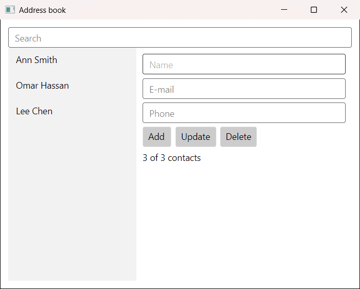
Address Book
An address book: a list of contacts with a search box and a form; add, change and delete contacts
cd samples/UsingDotNet/tests/packages/AvaloniaSamples/apps/AddressBook then ring AddressBook.ringSource code
# An address book: a list of contacts with a search box and a form; add, change and delete contacts
load "../../avalonia.ring"
avUse()
aContacts = [["Ann Smith","ann@example.com","555-0101"],["Omar Hassan","omar@example.com","555-0102"],["Lee Chen","lee@example.com","555-0103"]]
aShown = [] # the numbers of the contacts that the list shows
oWindow = avWindow("Address book",560,420)
oDock = new DockPanel()
oDock.Margin = avThickness(12)
oWindow.Content = oDock
oSearch = new TextBox()
oSearch.Watermark = "Search"
oSearch.setTextChangedEvent("showList()")
oDock.SetDock(oSearch,"Top")
oList = new ListBox()
oList.Width = 200
oList.setSelectionChangedEvent("selected()")
oDock.SetDock(oList,"Left")
oForm = avStack(6,10)
oName = new TextBox()
oName.Watermark = "Name"
oEmail = new TextBox()
oEmail.Watermark = "E-mail"
oPhone = new TextBox()
oPhone.Watermark = "Phone"
oMessage = avText("")
oButtons = avRow(6)
oButtons {
Children.Add(avButton("Add","addContact()"))
Children.Add(avButton("Update","updateContact()"))
Children.Add(avButton("Delete","deleteContact()"))
}
oForm {
Children.Add(oName)
Children.Add(oEmail)
Children.Add(oPhone)
Children.Add(oButtons)
Children.Add(oMessage)
}
oDock {
Children.Add(oSearch)
Children.Add(oList)
Children.Add(oForm)
}
showList()
avRun(oWindow)
# --------------------------------------------------------------------------
func textOf oBox
cText = oBox.Text
if isstring(cText)
return cText
ok
return ""
# the contacts that match the search text (in the name or the e-mail)
func showList
if not isobject(oMessage)
return
ok
cSearch = lower(textOf(oSearch))
oList.Items.Clear()
aShown = []
for nContact = 1 to len(aContacts)
if cSearch = "" or substr(lower(aContacts[nContact][1]),cSearch) > 0 or substr(lower(aContacts[nContact][2]),cSearch) > 0
aShown + nContact
oList.Items.Add(aContacts[nContact][1])
ok
next
oMessage.Text = "" + len(aShown) + " of " + len(aContacts) + " contacts"
# the number of the contact that is selected (0 when none)
func current
nLine = oList.SelectedIndex
if nLine < 0 or nLine >= len(aShown)
return 0
ok
return aShown[nLine + 1]
func selected
nContact = current()
if nContact > 0
oName.Text = aContacts[nContact][1]
oEmail.Text = aContacts[nContact][2]
oPhone.Text = aContacts[nContact][3]
ok
# a name and an e-mail with an @ are needed
func valid
if textOf(oName) = ""
oMessage.Text = "A name is needed"
return False
ok
if substr(textOf(oEmail),"@") = 0
oMessage.Text = "The e-mail needs an @"
return False
ok
return True
func addContact
if valid()
aContacts + [textOf(oName),textOf(oEmail),textOf(oPhone)]
showList()
oMessage.Text = "Added " + textOf(oName)
ok
func updateContact
nContact = current()
if nContact > 0 and valid()
aContacts[nContact] = [textOf(oName),textOf(oEmail),textOf(oPhone)]
showList()
oMessage.Text = "Updated " + textOf(oName)
ok
func deleteContact
nContact = current()
if nContact > 0
del(aContacts,nContact)
showList()
oName.Text = ""
oEmail.Text = ""
oPhone.Text = ""
ok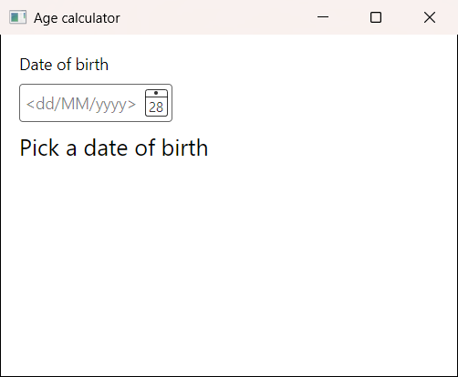
Age Calculator
Age calculator: the date of birth gives the age in years, months and days, the days lived and the days to the next birthday
cd samples/UsingDotNet/tests/packages/AvaloniaSamples/apps/AgeCalculator then ring AgeCalculator.ringSource code
# Age calculator: the date of birth gives the age in years, months and days, the days lived and the days to the next birthday
load "../../avalonia.ring"
avUse()
oWindow = avWindow("Age calculator",400,300)
oPanel = avStack(8,16)
oWindow.Content = oPanel
oBirth = new CalendarDatePicker()
oBirth.setSelectedDateChangedEvent("picked()")
oAge = avText("Pick a date of birth")
oAge.FontSize = 20
oDays = avText("")
oNext = avText("")
oPanel {
Children.Add(avText("Date of birth"))
Children.Add(oBirth)
Children.Add(oAge)
Children.Add(oDays)
Children.Add(oNext)
}
avRun(oWindow)
# --------------------------------------------------------------------------
func isLeap nYear
return (nYear % 4 = 0 and nYear % 100 != 0) or nYear % 400 = 0
func daysInMonth nYear, nMonth
aDays = [31,28,31,30,31,30,31,31,30,31,30,31]
if nMonth = 2 and isLeap(nYear)
return 29
ok
return aDays[nMonth]
# the age between two dates [years, months, days]
func ageBetween nYear1, nMonth1, nDay1, nYear2, nMonth2, nDay2
nYears = nYear2 - nYear1
nMonths = nMonth2 - nMonth1
nDays = nDay2 - nDay1
if nDays < 0
nMonths--
nPreviousMonth = nMonth2 - 1
nPreviousYear = nYear2
if nPreviousMonth = 0
nPreviousMonth = 12
nPreviousYear--
ok
nDays += daysInMonth(nPreviousYear,nPreviousMonth)
ok
if nMonths < 0
nYears--
nMonths += 12
ok
return [nYears,nMonths,nDays]
# show the age at a date
func showAge oBirthDate, oToday
aAge = ageBetween(oBirthDate.Year,oBirthDate.Month,oBirthDate.Day,oToday.Year,oToday.Month,oToday.Day)
oAge.Text = "" + aAge[1] + " years, " + aAge[2] + " months, " + aAge[3] + " days"
nLived = floor(oToday.Subtract(oBirthDate).TotalDays)
oDays.Text = "" + nLived + " days lived"
oBirthday = dnNew("System.DateTime",[oToday.Year,oBirthDate.Month,min(oBirthDate.Day,daysInMonth(oToday.Year,oBirthDate.Month))])
if oBirthday.CompareTo(oToday) < 0
oBirthday = dnNew("System.DateTime",[oToday.Year + 1,oBirthDate.Month,min(oBirthDate.Day,daysInMonth(oToday.Year + 1,oBirthDate.Month))])
ok
oNext.Text = "" + floor(oBirthday.Subtract(oToday).TotalDays) + " days to the next birthday"
func picked
oDate = oBirth.SelectedDate
if not oDate.isNull()
showAge(oDate,dnStatic("System.DateTime","get_Today",[]))
ok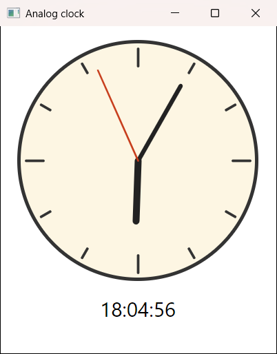
Analog Clock
An analog clock: a face with twelve marks and three hands (lines) that turn every second; the digital time is shown below
cd samples/UsingDotNet/tests/packages/AvaloniaSamples/apps/AnalogClock then ring AnalogClock.ringSource code
# An analog clock: a face with twelve marks and three hands (lines) that turn every second; the digital time is shown below
load "../../avalonia.ring"
avUse()
nCenter = 150
nRadius = 130
oWindow = avWindow("Analog clock",320,380)
oPanel = avStack(6,6)
oWindow.Content = oPanel
oCanvas = new Canvas()
oCanvas {
Width = 300
Height = 300
}
oFace = new Ellipse()
oFace {
Width = nRadius * 2 + 20
Height = nRadius * 2 + 20
Fill = avBrush("#FDF6E3")
Stroke = avBrush("#333333")
StrokeThickness = 4
}
oCanvas.SetLeft(oFace,nCenter - nRadius - 10)
oCanvas.SetTop(oFace,nCenter - nRadius - 10)
oCanvas.Children.Add(oFace)
for nMark = 0 to 11
nAngle = nMark * 30
nLong = 12
if nMark % 3 = 0
nLong = 20
ok
oMark = hand(nAngle,nRadius - nLong,nRadius,"#333333",3)
oCanvas.Children.Add(oMark)
next
oHour = hand(0,0,70,"#222222",8)
oMinute = hand(0,0,100,"#222222",5)
oSecond = hand(0,0,115,"#C73E1D",2)
oCanvas {
Children.Add(oHour)
Children.Add(oMinute)
Children.Add(oSecond)
}
oDigital = avText("")
oDigital.FontSize = 24
oDigital.HorizontalAlignment = "Center"
oPanel {
Children.Add(oCanvas)
Children.Add(oDigital)
}
oTimer = new DispatcherTimer()
oTimer.Interval = dnStatic("System.TimeSpan","FromSeconds",[1])
oTimer.setTickEvent("tickNow()")
oTimer.Start()
tickNow()
avRun(oWindow)
# --------------------------------------------------------------------------
# a point on the circle of a radius: the angle goes clockwise from twelve o'clock, in degrees
func pointAt nAngle, nLength
nRadians = nAngle * 3.14159265358979 / 180
return [nCenter + nLength * sin(nRadians),nCenter - nLength * cos(nRadians)]
# a line at an angle from a distance of the center to another
func hand nAngle, nFrom, nTo, cColor, nThickness
oLine = new Line()
oLine.Stroke = avBrush(cColor)
oLine.StrokeThickness = nThickness
oLine.StrokeLineCap = "Round"
setHand(oLine,nAngle,nFrom,nTo)
return oLine
func setHand oLine, nAngle, nFrom, nTo
aStart = pointAt(nAngle,nFrom)
aEnd = pointAt(nAngle,nTo)
oLine.StartPoint = (new Point).@New([ :x = aStart[1], :y = aStart[2] ])
oLine.EndPoint = (new Point).@New([ :x = aEnd[1], :y = aEnd[2] ])
# the hands show a time
func showTime nHours, nMinutes, nSeconds
setHand(oSecond,nSeconds * 6,0,115)
setHand(oMinute,nMinutes * 6 + nSeconds / 10,0,100)
setHand(oHour,(nHours % 12) * 30 + nMinutes / 2,0,70)
oDigital.Text = two(nHours) + ":" + two(nMinutes) + ":" + two(nSeconds)
func two nNumber
if nNumber < 10
return "0" + nNumber
ok
return "" + nNumber
func tickNow
oNow = dnStatic("System.DateTime","get_Now",[])
showTime(oNow.Hour,oNow.Minute,oNow.Second)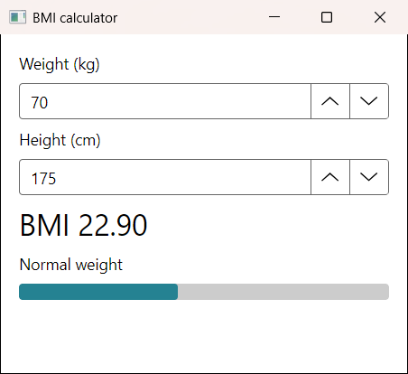
BMICalculator
Body mass index: the weight in kilograms and the height in centimeters give the index and its class
cd samples/UsingDotNet/tests/packages/AvaloniaSamples/apps/BMICalculator then ring BMICalculator.ringSource code
# Body mass index: the weight in kilograms and the height in centimeters give the index and its class
load "../../avalonia.ring"
avUse()
oWindow = avWindow("BMI calculator",360,300)
oPanel = avStack(8,16)
oWindow.Content = oPanel
oWeight = numberBox(70,20,300)
oHeight = numberBox(175,100,250)
oIndex = avText("")
oIndex.FontSize = 26
oClass = avText("")
oBar = new ProgressBar()
oBar {
Minimum = 10
Maximum = 40
Height = 14
}
oPanel {
Children.Add(avText("Weight (kg)"))
Children.Add(oWeight)
Children.Add(avText("Height (cm)"))
Children.Add(oHeight)
Children.Add(oIndex)
Children.Add(oClass)
Children.Add(oBar)
}
calculate()
avRun(oWindow)
# --------------------------------------------------------------------------
func numberBox nValue, nMinimum, nMaximum
oBox = new NumericUpDown()
oBox {
Minimum = nMinimum
Maximum = nMaximum
Value = nValue
setValueChangedEvent("calculate()")
}
return oBox
# the index: the weight divided by the square of the height in meters
func bmi nKilograms, nCentimeters
nMeters = nCentimeters / 100
return nKilograms / (nMeters * nMeters)
func classOf nIndex
if nIndex < 18.5
return "Underweight"
but nIndex < 25
return "Normal weight"
but nIndex < 30
return "Overweight"
ok
return "Obese"
func calculate
if not isobject(oBar)
return
ok
nIndex = bmi(oWeight.Value,oHeight.Value)
oIndex.Text = "BMI " + (floor(nIndex * 10 + 0.5) / 10)
oClass.Text = classOf(nIndex)
oBar.Value = nIndex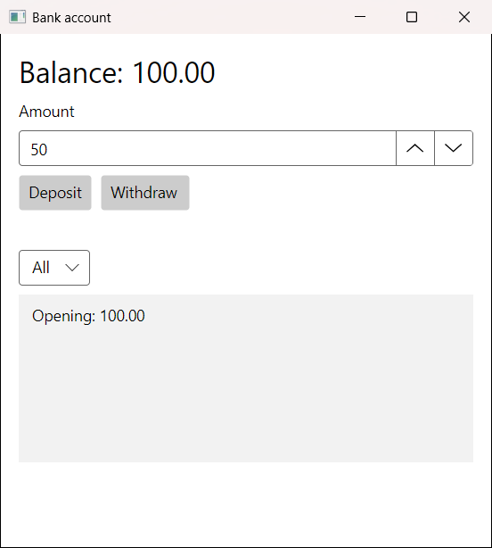
Bank Account
A bank account: deposits and withdrawals with a history; a withdrawal of more than the balance is refused; the history can be filtered
cd samples/UsingDotNet/tests/packages/AvaloniaSamples/apps/BankAccount then ring BankAccount.ringSource code
# A bank account: deposits and withdrawals with a history; a withdrawal of more than the balance is refused; the history can be filtered
load "../../avalonia.ring"
avUse()
nBalance = 100
aHistory = [["Opening",100]] # [description, amount]: a deposit is positive, a withdrawal negative
oWindow = avWindow("Bank account",440,460)
oPanel = avStack(8,16)
oWindow.Content = oPanel
oBalance = avText("")
oBalance.FontSize = 26
oAmount = new NumericUpDown()
oAmount {
Minimum = 0.01
Maximum = 1000000
Increment = 10
Value = 50
}
oMessage = avText("")
oFilter = new ComboBox()
for cKind in ["All","Deposits","Withdrawals"]
oFilter.Items.Add(cKind)
next
oFilter.SelectedIndex = 0
oFilter.setSelectionChangedEvent("showHistory()")
oList = new ListBox()
oList.Height = 150
oRow = avRow(8)
oRow {
Children.Add(avButton("Deposit","deposit()"))
Children.Add(avButton("Withdraw","withdraw()"))
}
oPanel {
Children.Add(oBalance)
Children.Add(avText("Amount"))
Children.Add(oAmount)
Children.Add(oRow)
Children.Add(oMessage)
Children.Add(oFilter)
Children.Add(oList)
}
showHistory()
avRun(oWindow)
# --------------------------------------------------------------------------
# a number with two decimals
func money nValue
nCents = floor(fabs(nValue) * 100 + 0.5)
nRest = nCents % 100
cRest = "" + nRest
if nRest < 10
cRest = "0" + nRest
ok
cSign = ""
if nValue < 0
cSign = "-"
ok
return cSign + floor(nCents / 100) + "." + cRest
func deposit
nAmount = oAmount.Value
if nAmount <= 0
return
ok
nBalance += nAmount
aHistory + ["Deposit",nAmount]
oMessage.Text = "Deposited " + money(nAmount)
showHistory()
func withdraw
nAmount = oAmount.Value
if nAmount > nBalance
oMessage.Text = "Refused: the balance is only " + money(nBalance)
return
ok
nBalance -= nAmount
aHistory + ["Withdrawal",-nAmount]
oMessage.Text = "Withdrew " + money(nAmount)
showHistory()
func showHistory
if not isobject(oList)
return
ok
oBalance.Text = "Balance: " + money(nBalance)
oList.Items.Clear()
cFilter = "All"
if oFilter.SelectedIndex >= 0
cFilter = "" + oFilter.SelectedItem
ok
for aEntry in aHistory
if cFilter = "All" or (cFilter = "Deposits" and aEntry[2] > 0) or (cFilter = "Withdrawals" and aEntry[2] < 0)
oList.Items.Add(aEntry[1] + ": " + money(aEntry[2]))
ok
next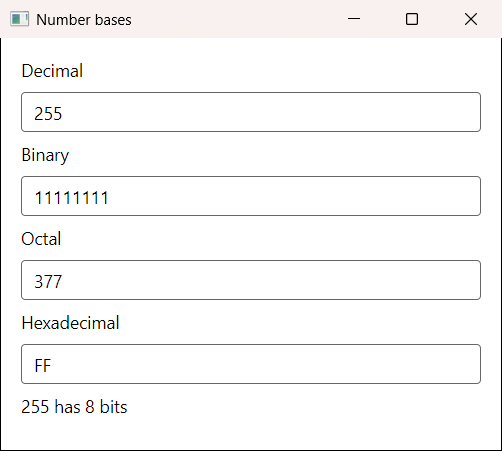
Binary Converter
Number bases: a whole number in decimal, binary, octal and hexadecimal; type in one box and the others follow
cd samples/UsingDotNet/tests/packages/AvaloniaSamples/apps/BinaryConverter then ring BinaryConverter.ringSource code
# Number bases: a whole number in decimal, binary, octal and hexadecimal; type in one box and the others follow
load "../../avalonia.ring"
avUse()
lBusy = False
oWindow = avWindow("Number bases",400,330)
oPanel = avStack(8,16)
oWindow.Content = oPanel
oDecimal = field(10)
oBinary = field(2)
oOctal = field(8)
oHex = field(16)
oState = avText("")
oPanel {
Children.Add(avText("Decimal"))
Children.Add(oDecimal)
Children.Add(avText("Binary"))
Children.Add(oBinary)
Children.Add(avText("Octal"))
Children.Add(oOctal)
Children.Add(avText("Hexadecimal"))
Children.Add(oHex)
Children.Add(oState)
}
oDecimal.Text = "255"
avRun(oWindow)
# --------------------------------------------------------------------------
func field nBase
oBox = new TextBox()
oBox.setTextChangedEvent("typed(" + nBase + ")")
return oBox
# the digits of a number in a base
func toBase nNumber, nBase
if nNumber = 0
return "0"
ok
cDigits = "0123456789ABCDEF"
cText = ""
while nNumber > 0
cText = cDigits[nNumber % nBase + 1] + cText
nNumber = floor(nNumber / nBase)
end
return cText
# the number of digits in a base, -1 when a character is not a digit of the base
func fromBase cText, nBase
if cText = ""
return -1
ok
cDigits = "0123456789ABCDEF"
nNumber = 0
for cChar in upper(cText)
nDigit = substr(cDigits,cChar) - 1
if nDigit < 0 or nDigit >= nBase
return -1
ok
nNumber = nNumber * nBase + nDigit
next
return nNumber
func textOf oBox
cText = oBox.Text
if isstring(cText)
return cText
ok
return ""
# a box was typed in: the others show the same number
func typed nBase
if lBusy
return
ok
switch nBase
on 10
cText = textOf(oDecimal)
on 2
cText = textOf(oBinary)
on 8
cText = textOf(oOctal)
on 16
cText = textOf(oHex)
off
nNumber = fromBase(cText,nBase)
if nNumber < 0
oState.Text = "Not a base " + nBase + " number"
return
ok
lBusy = True
if nBase != 10
oDecimal.Text = "" + nNumber
ok
if nBase != 2
oBinary.Text = toBase(nNumber,2)
ok
if nBase != 8
oOctal.Text = toBase(nNumber,8)
ok
if nBase != 16
oHex.Text = toBase(nNumber,16)
ok
lBusy = False
oState.Text = "" + nNumber + " has " + len(toBase(nNumber,2)) + " bits"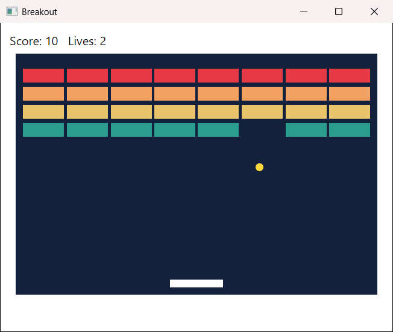
Breakout
Breakout: a ball breaks the bricks; the paddle follows the left and right keys (or A and D); three lives
cd samples/UsingDotNet/tests/packages/AvaloniaSamples/apps/Breakout then ring Breakout.ringSource code
# Breakout: a ball breaks the bricks; the paddle follows the left and right keys (or A and D); three lives
load "../../avalonia.ring"
avUse()
nWidth = 480
nHeight = 320
nPaddleWidth = 70
nPaddleX = 205
nBallX = 240
nBallY = 250
nSpeedX = 3
nSpeedY = -4
nLives = 3
nScore = 0
nRows = 4
nColumns = 8
aBricks = [] # [shape, alive]
lOver = False
oWindow = avWindow("Breakout",nWidth + 40,nHeight + 90)
oPanel = avStack(6,12)
oWindow.Content = oPanel
oInfo = avText("")
oInfo.FontSize = 16
oCanvas = new Canvas()
oCanvas {
Width = nWidth
Height = nHeight
Background = avBrush("#14213D")
}
aColors = ["#E63946","#F4A261","#E9C46A","#2A9D8F"]
for nRow = 1 to nRows
for nColumn = 1 to nColumns
oBrick = new Rectangle()
oBrick.Width = 54
oBrick.Height = 18
oBrick.Fill = avBrush(aColors[nRow])
oCanvas.SetLeft(oBrick,10 + (nColumn - 1) * 58)
oCanvas.SetTop(oBrick,20 + (nRow - 1) * 24)
oCanvas.Children.Add(oBrick)
aBricks + [oBrick,True]
next
next
oPaddle = new Rectangle()
oPaddle.Width = nPaddleWidth
oPaddle.Height = 10
oPaddle.Fill = avBrush("White")
oBall = new Ellipse()
oBall.Width = 10
oBall.Height = 10
oBall.Fill = avBrush("#FFD93D")
oCanvas.Children.Add(oPaddle)
oCanvas.Children.Add(oBall)
oPanel {
Children.Add(oInfo)
Children.Add(oCanvas)
}
oWindow.setKeyDownEvent("keyDown(aDotNetArgs[2].Key)")
oTimer = new DispatcherTimer()
oTimer.Interval = dnStatic("System.TimeSpan","FromMilliseconds",[20])
oTimer.setTickEvent("tick()")
draw()
oTimer.Start()
avRun(oWindow)
# --------------------------------------------------------------------------
func keyDown cKey
cKey = "" + cKey
if cKey = "Left" or cKey = "A"
nPaddleX = max(0,nPaddleX - 24)
but cKey = "Right" or cKey = "D"
nPaddleX = min(nWidth - nPaddleWidth,nPaddleX + 24)
ok
func bricksLeft
nCount = 0
for aBrick in aBricks
if aBrick[2]
nCount++
ok
next
return nCount
# a brick that the ball touches breaks and the ball turns back
func hitBricks
for nBrick = 1 to len(aBricks)
if aBricks[nBrick][2]
nLeft = 10 + ((nBrick - 1) % nColumns) * 58
nTop = 20 + floor((nBrick - 1) / nColumns) * 24
if nBallX + 10 >= nLeft and nBallX <= nLeft + 54 and nBallY + 10 >= nTop and nBallY <= nTop + 18
aBricks[nBrick][2] = False
aBricks[nBrick][1].IsVisible = False
nScore += 10
nSpeedY = -nSpeedY
return True
ok
ok
next
return False
func tick
if lOver
return
ok
nBallX += nSpeedX
nBallY += nSpeedY
if nBallX <= 0 or nBallX >= nWidth - 10
nSpeedX = -nSpeedX
ok
if nBallY <= 0
nSpeedY = -nSpeedY
ok
hitBricks()
if nSpeedY > 0 and nBallY + 10 >= nHeight - 20 and nBallY <= nHeight - 8 and nBallX + 10 >= nPaddleX and nBallX <= nPaddleX + nPaddleWidth
nSpeedY = -nSpeedY
nSpeedX = (nBallX + 5 - (nPaddleX + nPaddleWidth / 2)) / 10
ok
if nBallY > nHeight
nLives--
nBallX = nWidth / 2
nBallY = 250
nSpeedX = 3
nSpeedY = -4
if nLives = 0
lOver = True
ok
ok
if bricksLeft() = 0
lOver = True
ok
draw()
func draw
oCanvas.SetLeft(oPaddle,nPaddleX)
oCanvas.SetTop(oPaddle,nHeight - 20)
oCanvas.SetLeft(oBall,nBallX)
oCanvas.SetTop(oBall,nBallY)
if lOver and bricksLeft() = 0
oInfo.Text = "You won! Score: " + nScore
but lOver
oInfo.Text = "Game over. Score: " + nScore
else
oInfo.Text = "Score: " + nScore + " Lives: " + nLives
ok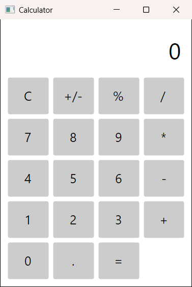
Calculator
A calculator: a display and a grid of buttons; each button calls press() with its key
cd samples/UsingDotNet/tests/packages/AvaloniaSamples/apps/Calculator then ring Calculator.ringSource code
# A calculator: a display and a grid of buttons; each button calls press() with its key
load "../../avalonia.ring"
avUse()
cDisplay = "0"
nLeft = 0
cOperator = ""
lNew = True # the next digit starts a new number
oWindow = avWindow("Calculator",300,420)
oGrid = new Grid()
oGrid.Margin = avThickness(8)
oGrid.RowDefinitions = (new RowDefinitions).Parse("80,*,*,*,*,*")
oGrid.ColumnDefinitions = (new ColumnDefinitions).Parse("*,*,*,*")
oWindow.Content = oGrid
oScreen = new TextBlock()
oScreen {
Text = "0"
FontSize = 36
HorizontalAlignment = "Right"
VerticalAlignment = "Center"
Margin = avThickness(8)
}
oGrid.SetColumnSpan(oScreen,4)
oGrid.Children.Add(oScreen)
aKeys = [
["C","+/-","%","/"],
["7","8","9","*"],
["4","5","6","-"],
["1","2","3","+"],
["0",".","=",""]
]
nRows = len(aKeys)
for nRow = 1 to nRows
for nColumn = 1 to 4
cKey = aKeys[nRow][nColumn]
if cKey != ""
oKey = avButton(cKey,'press("' + cKey + '")')
oKey.HorizontalAlignment = "Stretch"
oKey.VerticalAlignment = "Stretch"
oKey.HorizontalContentAlignment = "Center"
oKey.VerticalContentAlignment = "Center"
oKey.FontSize = 20
oKey.Margin = avThickness(3)
oGrid.SetRow(oKey,nRow)
oGrid.SetColumn(oKey,nColumn - 1)
oGrid.Children.Add(oKey)
ok
next
next
avRun(oWindow)
# --------------------------------------------------------------------------
# a key of the calculator
func press cKey
if isdigit(cKey)
if lNew or cDisplay = "0"
cDisplay = cKey
else
cDisplay += cKey
ok
lNew = False
but cKey = "."
if lNew
cDisplay = "0."
lNew = False
but substr(cDisplay,".") = 0
cDisplay += "."
ok
but cKey = "C"
cDisplay = "0"
nLeft = 0
cOperator = ""
lNew = True
but cKey = "+/-"
if left(cDisplay,1) = "-"
cDisplay = substr(cDisplay,2)
but cDisplay != "0"
cDisplay = "-" + cDisplay
ok
but cKey = "%"
cDisplay = shown(number(cDisplay) / 100)
lNew = True
but cKey = "="
calculate()
cOperator = ""
lNew = True
else
# + - * /
if cOperator != "" and not lNew
calculate()
ok
nLeft = number(cDisplay)
cOperator = cKey
lNew = True
ok
oScreen.Text = cDisplay
# the pending operation: nLeft cOperator the display
func calculate
if cOperator = ""
return
ok
nRight = number(cDisplay)
switch cOperator
on "+"
nResult = nLeft + nRight
on "-"
nResult = nLeft - nRight
on "*"
nResult = nLeft * nRight
on "/"
if nRight = 0
cDisplay = "Error"
cOperator = ""
return
ok
nResult = nLeft / nRight
off
cDisplay = shown(nResult)
nLeft = nResult
# a number as text: whole numbers without decimals, the others with up to 10 decimals and no zeros at the end
func shown nValue
if nValue = floor(nValue)
return "" + floor(nValue)
ok
decimals(10)
cText = "" + nValue
decimals(2)
while right(cText,1) = "0"
cText = left(cText,len(cText) - 1)
end
if right(cText,1) = "."
cText = left(cText,len(cText) - 1)
ok
return cText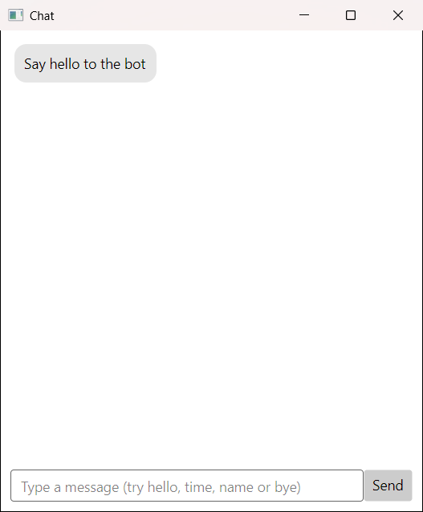
Chat Bubbles
A chat with bubbles: your messages on the right, the replies of a simple bot on the left; the list scrolls to the last message
cd samples/UsingDotNet/tests/packages/AvaloniaSamples/apps/ChatBubbles then ring ChatBubbles.ringSource code
# A chat with bubbles: your messages on the right, the replies of a simple bot on the left; the list scrolls to the last message
load "../../avalonia.ring"
avUse()
aReplies = [["hello","Hello! How can I help?"],["time","I do not have a clock, but your computer has one."],["name","I am a small bot written in Ring."],["bye","Goodbye!"]]
nMessages = 0
oWindow = avWindow("Chat",420,480)
oDock = new DockPanel()
oDock.Margin = avThickness(10)
oWindow.Content = oDock
oRow = new DockPanel()
oSend = avButton("Send","send()")
oRow.SetDock(oSend,"Right")
oInput = new TextBox()
oInput.Watermark = "Type a message (try hello, time, name or bye)"
oRow {
Children.Add(oSend)
Children.Add(oInput)
}
oDock.SetDock(oRow,"Bottom")
oScroll = new ScrollViewer()
oMessages = avStack(6,4)
oScroll.Content = oMessages
oDock {
Children.Add(oRow)
Children.Add(oScroll)
}
bubble("Say hello to the bot",False)
avRun(oWindow)
# --------------------------------------------------------------------------
# a bubble with a text, on the right for the user and on the left for the bot
func bubble cText, lUser
oBubble = new Border()
oBubble.CornerRadius = (new CornerRadius).Parse("12")
oBubble.Padding = avThickness(10)
oBubble.MaxWidth = 280
oText = avText(cText)
oText.TextWrapping = "Wrap"
if lUser
oBubble.Background = avBrush("#2E86AB")
oBubble.HorizontalAlignment = "Right"
oText.Foreground = avBrush("White")
else
oBubble.Background = avBrush("#E6E6E6")
oBubble.HorizontalAlignment = "Left"
ok
oBubble.Child = oText
oMessages.Children.Add(oBubble)
nMessages++
oScroll.ScrollToEnd()
# the answer of the bot: the first reply whose key word is in the message
func answerTo cText
cLower = lower(cText)
for aReply in aReplies
if substr(cLower,aReply[1]) > 0
return aReply[2]
ok
next
return "I do not understand: " + cText
func send
cText = oInput.Text
if not isstring(cText) or trim(cText) = ""
return
ok
bubble(trim(cText),True)
bubble(answerTo(cText),False)
oInput.Text = ""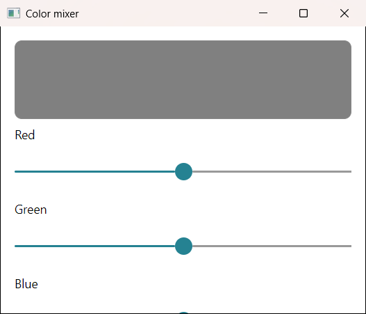
Color Mixer
A color mixer: three sliders make a color, a rectangle shows it, its code is written as text; a code that is typed moves the sliders
cd samples/UsingDotNet/tests/packages/AvaloniaSamples/apps/ColorMixer then ring ColorMixer.ringSource code
# A color mixer: three sliders make a color, a rectangle shows it, its code is written as text; a code that is typed moves the sliders
load "../../avalonia.ring"
avUse()
oWindow = avWindow("Color mixer",420,330)
oPanel = new StackPanel()
oPanel {
Spacing = 8
Margin = avThickness(16)
}
oWindow.Content = oPanel
oPreview = new Border()
oPreview {
Height = 90
CornerRadius = (new CornerRadius).Parse("8")
BorderBrush = avBrush("#888888")
BorderThickness = avThickness(1)
}
oPanel.Children.Add(oPreview)
oRed = channel("Red")
oGreen = channel("Green")
oBlue = channel("Blue")
oCode = new TextBox()
oCode {
Watermark = "#RRGGBB"
Width = 140
HorizontalAlignment = "Left"
}
oCode.setTextChangedEvent("typed()")
oRow = new StackPanel()
oRow {
Orientation = "Horizontal"
Spacing = 8
}
oRow {
Children.Add(avText("Code:"))
Children.Add(oCode)
Children.Add(avButton("Random","randomColor()"))
Children.Add(avButton("Gray","gray()"))
}
oPanel.Children.Add(oRow)
lBusy = False
mix()
avRun(oWindow)
# --------------------------------------------------------------------------
# a slider from 0 to 255 with a name; it changes the color when it moves
func channel cName
oLabel = avText(cName)
oSlider = new Slider()
oSlider {
Minimum = 0
Maximum = 255
Value = 128
setValueChangedEvent("mix()")
}
oPanel.Children.Add(oLabel)
oPanel.Children.Add(oSlider)
return oSlider
# the color of the three sliders: the rectangle and the code
func mix
if lBusy
return
ok
lBusy = True
cHex = hex2(floor(oRed.Value)) + hex2(floor(oGreen.Value)) + hex2(floor(oBlue.Value))
oPreview.Background = avBrush("#" + cHex)
oCode.Text = "#" + cHex
lBusy = False
# two hexadecimal digits
func hex2 nValue
cDigits = "0123456789ABCDEF"
return cDigits[floor(nValue / 16) + 1] + cDigits[nValue % 16 + 1]
# the code that was typed (when it is a whole code the sliders follow it)
func typed
if lBusy
return
ok
cText = oCode.Text
if not isstring(cText) or len(cText) != 7 or left(cText,1) != "#"
return
ok
lBusy = True
oRed.Value = hex2num(substr(cText,2,2))
oGreen.Value = hex2num(substr(cText,4,2))
oBlue.Value = hex2num(substr(cText,6,2))
oPreview.Background = avBrush(cText)
lBusy = False
# a whole number from hexadecimal digits
func hex2num cText
nValue = 0
cDigits = "0123456789ABCDEF"
for cChar in upper(cText)
nPos = substr(cDigits,cChar)
if nPos = 0
return 0
ok
nValue = nValue * 16 + nPos - 1
next
return nValue
func randomColor
oRed.Value = random(255)
oGreen.Value = random(255)
oBlue.Value = random(255)
func gray
oRed.Value = 128
oGreen.Value = 128
oBlue.Value = 128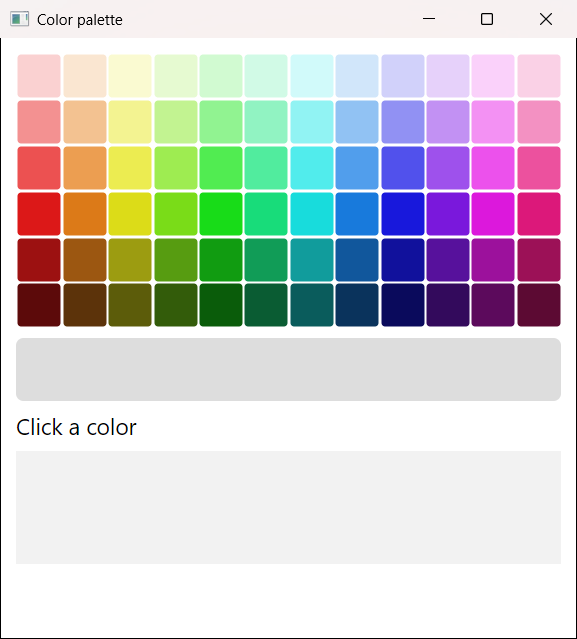
Color Palette
Color palette: a grid of colors made from hue, saturation and lightness; a click shows the code and the RGB values and adds the color to a history
cd samples/UsingDotNet/tests/packages/AvaloniaSamples/apps/ColorPalette then ring ColorPalette.ringSource code
# Color palette: a grid of colors made from hue, saturation and lightness; a click shows the code and the RGB values and adds the color to a history
load "../../avalonia.ring"
avUse()
nHues = 12
nShades = 6
aHistory = []
cCurrent = ""
oWindow = avWindow("Color palette",460,480)
oPanel = avStack(8,12)
oWindow.Content = oPanel
oGrid = new UniformGrid()
oGrid.Columns = nHues
oGrid.Rows = nShades
oGrid.Height = 220
aSwatches = []
for nShade = 1 to nShades
for nHue = 1 to nHues
cColor = colorAt(nHue,nShade)
oSwatch = avButton("","pick('" + cColor + "')")
oSwatch {
HorizontalAlignment = "Stretch"
VerticalAlignment = "Stretch"
Margin = avThickness(1)
Background = avBrush(cColor)
}
aSwatches + oSwatch
oGrid.Children.Add(oSwatch)
next
next
oPreview = new Border()
oPreview {
Height = 50
CornerRadius = (new CornerRadius).Parse("6")
Background = avBrush("#DDDDDD")
}
oCode = avText("Click a color")
oCode.FontSize = 18
oHistory = new ListBox()
oHistory.Height = 90
oPanel {
Children.Add(oGrid)
Children.Add(oPreview)
Children.Add(oCode)
Children.Add(oHistory)
}
avRun(oWindow)
# --------------------------------------------------------------------------
# two hexadecimal digits
func hex2 nValue
cDigits = "0123456789ABCDEF"
nValue = floor(nValue + 0.5)
return cDigits[floor(nValue / 16) + 1] + cDigits[nValue % 16 + 1]
# the code of a color from hue (0 to 360), saturation and lightness (0 to 1)
func hslToCode nHue, nSaturation, nLightness
nC = (1 - fabs(2 * nLightness - 1)) * nSaturation
nHuePart = nHue / 60
nX = nC * (1 - fabs((nHuePart % 2) - 1))
nM = nLightness - nC / 2
nR = 0
nG = 0
nB = 0
if nHuePart < 1
nR = nC
nG = nX
but nHuePart < 2
nR = nX
nG = nC
but nHuePart < 3
nG = nC
nB = nX
but nHuePart < 4
nG = nX
nB = nC
but nHuePart < 5
nR = nX
nB = nC
else
nR = nC
nB = nX
ok
return "#" + hex2((nR + nM) * 255) + hex2((nG + nM) * 255) + hex2((nB + nM) * 255)
# the color of a swatch: the hue by column, the lightness by row
func colorAt nHue, nShade
return hslToCode((nHue - 1) * 360 / nHues,0.8,0.9 - (nShade - 1) * 0.14)
func pick cColor
cCurrent = cColor
oPreview.Background = avBrush(cColor)
oCode.Text = cColor + " " + rgbText(cColor)
if find(aHistory,cColor) = 0
aHistory + cColor
oHistory.Items.Add(cColor)
ok
func rgbText cColor
oColor = (new Color).Parse(cColor)
return "rgb(" + oColor.R + ", " + oColor.G + ", " + oColor.B + ")"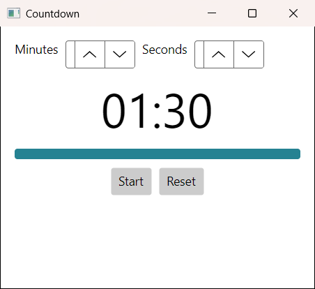
Countdown
Countdown: set minutes and seconds, start, pause and reset; the timer ticks every second and the bar shows what is left
cd samples/UsingDotNet/tests/packages/AvaloniaSamples/apps/Countdown then ring Countdown.ringSource code
# Countdown: set minutes and seconds, start, pause and reset; the timer ticks every second and the bar shows what is left
load "../../avalonia.ring"
avUse()
nTotal = 0 # the seconds at the start
nLeft = 0 # the seconds that are left
oWindow = avWindow("Countdown",360,300)
oPanel = avStack(10,16)
oWindow.Content = oPanel
oMinutes = box(1,0,99)
oSeconds = box(30,0,59)
oDisplay = avText("01:30")
oDisplay.FontSize = 54
oDisplay.HorizontalAlignment = "Center"
oBar = new ProgressBar()
oBar {
Minimum = 0
Maximum = 100
Height = 12
}
oStart = avButton("Start","startPause()")
oReset = avButton("Reset","reset()")
oRow = avRow(8)
oRow {
Children.Add(avText("Minutes"))
Children.Add(oMinutes)
Children.Add(avText("Seconds"))
Children.Add(oSeconds)
}
oButtons = avRow(8)
oButtons.HorizontalAlignment = "Center"
oButtons {
Children.Add(oStart)
Children.Add(oReset)
}
oPanel {
Children.Add(oRow)
Children.Add(oDisplay)
Children.Add(oBar)
Children.Add(oButtons)
}
oTimer = new DispatcherTimer()
oTimer.Interval = dnStatic("System.TimeSpan","FromSeconds",[1])
oTimer.setTickEvent("tick()")
reset()
avRun(oWindow)
# --------------------------------------------------------------------------
func box nValue, nMinimum, nMaximum
oBox = new NumericUpDown()
oBox {
Minimum = nMinimum
Maximum = nMaximum
Value = nValue
Width = 80
setValueChangedEvent("reset()")
}
return oBox
func two nNumber
if nNumber < 10
return "0" + nNumber
ok
return "" + nNumber
# seconds as minutes:seconds
func clock nSeconds
return two(floor(nSeconds / 60)) + ":" + two(nSeconds % 60)
func show
oDisplay.Text = clock(nLeft)
if nTotal > 0
oBar.Value = nLeft * 100 / nTotal
else
oBar.Value = 0
ok
func reset
if not isobject(oStart)
return
ok
oTimer.Stop()
oStart.Content = "Start"
nTotal = floor(oMinutes.Value) * 60 + floor(oSeconds.Value)
nLeft = nTotal
show()
func startPause
if oTimer.IsEnabled
oTimer.Stop()
oStart.Content = "Resume"
but nLeft > 0
oTimer.Start()
oStart.Content = "Pause"
ok
func tick
if nLeft > 0
nLeft--
ok
show()
if nLeft = 0
oTimer.Stop()
oStart.Content = "Start"
oDisplay.Text = "Time is up!"
ok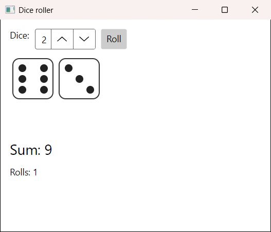
Dice Roller
Dice roller: roll one to six dice (the dots are drawn with ellipses), the sum is shown and the rolls are counted
cd samples/UsingDotNet/tests/packages/AvaloniaSamples/apps/DiceRoller then ring DiceRoller.ringSource code
# Dice roller: roll one to six dice (the dots are drawn with ellipses), the sum is shown and the rolls are counted
load "../../avalonia.ring"
avUse()
aDice = [] # the values of the dice
aDots = [[],[5],[1,9],[1,5,9],[1,3,7,9],[1,3,5,7,9],[1,3,4,6,7,9]] # the dots of a die: cells 1 to 9 of a 3 x 3 grid (the index is the value + 1)
nRolls = 0
oWindow = avWindow("Dice roller",420,330)
oPanel = avStack(10,14)
oWindow.Content = oPanel
oCount = new NumericUpDown()
oCount {
Minimum = 1
Maximum = 6
Value = 2
}
oTable = new WrapPanel()
oTable.Height = 120
oSum = avText("")
oSum.FontSize = 22
oRolled = avText("Rolls: 0")
oBar = avRow(8)
oBar {
Children.Add(avText("Dice:"))
Children.Add(oCount)
Children.Add(avButton("Roll","roll()"))
}
oPanel {
Children.Add(oBar)
Children.Add(oTable)
Children.Add(oSum)
Children.Add(oRolled)
}
roll()
avRun(oWindow)
# --------------------------------------------------------------------------
func roll
nDice = floor(oCount.Value)
aDice = []
for nDie = 1 to nDice
aDice + (random(5) + 1)
next
nRolls++
show()
# the dice on the table, the sum and the number of rolls
func show
oTable.Children.Clear()
nSum = 0
for nValue in aDice
oTable.Children.Add(dieView(nValue))
nSum += nValue
next
oSum.Text = "Sum: " + nSum
oRolled.Text = "Rolls: " + nRolls
# a white square with the dots of a value
func dieView nValue
oBorder = new Border()
oBorder {
Width = 64
Height = 64
Margin = avThickness(4)
Background = avBrush("White")
BorderBrush = avBrush("#333333")
BorderThickness = avThickness(2)
CornerRadius = (new CornerRadius).Parse("10")
}
oCanvas = new Canvas()
for nCell in aDots[nValue + 1]
oDot = new Ellipse()
oDot.Width = 12
oDot.Height = 12
oDot.Fill = avBrush("#222222")
oCanvas.SetLeft(oDot,8 + ((nCell - 1) % 3) * 17)
oCanvas.SetTop(oDot,8 + floor((nCell - 1) / 3) * 17)
oCanvas.Children.Add(oDot)
next
oBorder.Child = oCanvas
return oBorder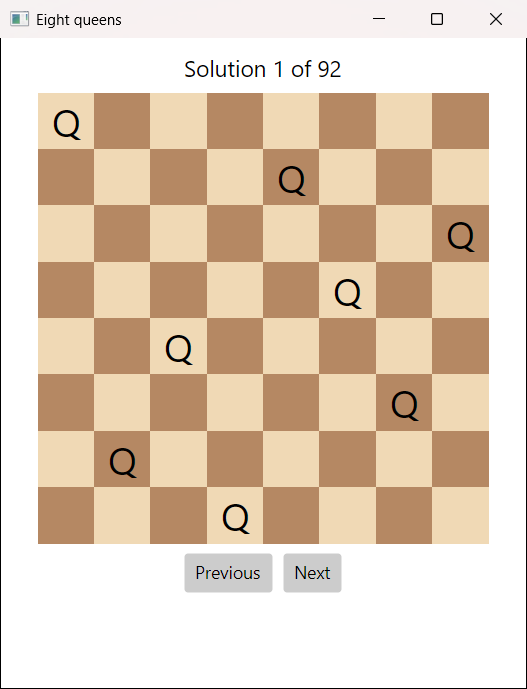
Eight Queens
Eight queens: a chess board where the program finds every way to put eight queens that do not attack each other; browse the 92 solutions
cd samples/UsingDotNet/tests/packages/AvaloniaSamples/apps/EightQueens then ring EightQueens.ringSource code
# Eight queens: a chess board where the program finds every way to put eight queens that do not attack each other; browse the 92 solutions
load "../../avalonia.ring"
avUse()
nSize = 8
aSolutions = [] # each solution is a list of the columns of the queens, one for each row
nCurrent = 1
oWindow = avWindow("Eight queens",420,520)
oPanel = avStack(8,12)
oWindow.Content = oPanel
oInfo = avText("")
oInfo.FontSize = 18
oInfo.HorizontalAlignment = "Center"
oBoard = new UniformGrid()
oBoard.Columns = nSize
oBoard.Rows = nSize
oBoard.Width = 360
oBoard.Height = 360
aSquares = []
for nSquare = 1 to nSize * nSize
nRow = floor((nSquare - 1) / nSize)
nColumn = (nSquare - 1) % nSize
oSquare = new Border()
if (nRow + nColumn) % 2 = 0
oSquare.Background = avBrush("#F0D9B5")
else
oSquare.Background = avBrush("#B58863")
ok
oText = avText("")
oText.FontSize = 30
oText.HorizontalAlignment = "Center"
oText.VerticalAlignment = "Center"
oSquare.Child = oText
aSquares + oSquare
oBoard.Children.Add(oSquare)
next
oBar = avRow(8)
oBar.HorizontalAlignment = "Center"
oBar {
Children.Add(avButton("Previous","previousSolution()"))
Children.Add(avButton("Next","nextSolution()"))
}
oPanel {
Children.Add(oInfo)
Children.Add(oBoard)
Children.Add(oBar)
}
solve(1,[])
showSolution()
avRun(oWindow)
# --------------------------------------------------------------------------
# a queen in a column of the next row is safe when no queen of the rows above is in its column or on a diagonal
func isSafe aQueens, nColumn
nRow = len(aQueens) + 1
for nOther = 1 to len(aQueens)
if aQueens[nOther] = nColumn or fabs(aQueens[nOther] - nColumn) = nRow - nOther
return False
ok
next
return True
# the rows are filled one after the other; a full board is a solution
func solve nRow, aQueens
if nRow > nSize
aSolutions + aQueens
return
ok
for nColumn = 1 to nSize
if isSafe(aQueens,nColumn)
aNext = aQueens
aNext + nColumn
solve(nRow + 1,aNext)
ok
next
func showSolution
aQueens = aSolutions[nCurrent]
for nSquare = 1 to nSize * nSize
aSquares[nSquare].Child.Text = ""
next
for nRow = 1 to nSize
aSquares[(nRow - 1) * nSize + aQueens[nRow]].Child.Text = "Q"
next
oInfo.Text = "Solution " + nCurrent + " of " + len(aSolutions)
func nextSolution
nCurrent++
if nCurrent > len(aSolutions)
nCurrent = 1
ok
showSolution()
func previousSolution
nCurrent--
if nCurrent < 1
nCurrent = len(aSolutions)
ok
showSolution()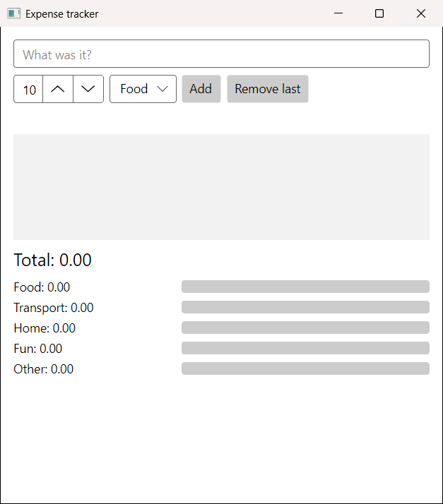
Expense Tracker
Expense tracker: add expenses with a category; the total, the total of each category and a bar for each category are shown
cd samples/UsingDotNet/tests/packages/AvaloniaSamples/apps/ExpenseTracker then ring ExpenseTracker.ringSource code
# Expense tracker: add expenses with a category; the total, the total of each category and a bar for each category are shown
load "../../avalonia.ring"
avUse()
aCategories = ["Food","Transport","Home","Fun","Other"]
aExpenses = [] # [description, category number, amount]
oWindow = avWindow("Expense tracker",500,540)
oPanel = avStack(8,14)
oWindow.Content = oPanel
oDescription = new TextBox()
oDescription.Watermark = "What was it?"
oAmount = new NumericUpDown()
oAmount {
Minimum = 0.01
Maximum = 1000000
Increment = 1
Value = 10
}
oCategory = new ComboBox()
for cName in aCategories
oCategory.Items.Add(cName)
next
oCategory.SelectedIndex = 0
oMessage = avText("")
oList = new ListBox()
oList.Height = 120
oTotal = avText("")
oTotal.FontSize = 20
oBars = avStack(4,0)
aBars = []
aTexts = []
for nCategory = 1 to len(aCategories)
oRow = new DockPanel()
oLabel = avText("")
oLabel.Width = 190
oBar = new ProgressBar()
oBar {
Minimum = 0
Maximum = 100
Height = 14
}
oRow.SetDock(oLabel,"Left")
oRow.Children.Add(oLabel)
oRow.Children.Add(oBar)
aTexts + oLabel
aBars + oBar
oBars.Children.Add(oRow)
next
oRowAdd = avRow(6)
oRowAdd {
Children.Add(oAmount)
Children.Add(oCategory)
Children.Add(avButton("Add","addExpense()"))
Children.Add(avButton("Remove last","removeLast()"))
}
oPanel {
Children.Add(oDescription)
Children.Add(oRowAdd)
Children.Add(oMessage)
Children.Add(oList)
Children.Add(oTotal)
Children.Add(oBars)
}
showAll()
avRun(oWindow)
# --------------------------------------------------------------------------
func money nValue
nCents = floor(nValue * 100 + 0.5)
nRest = nCents % 100
cRest = "" + nRest
if nRest < 10
cRest = "0" + nRest
ok
return "" + floor(nCents / 100) + "." + cRest
func totalOf nCategory
nSum = 0
for aExpense in aExpenses
if nCategory = 0 or aExpense[2] = nCategory
nSum += aExpense[3]
ok
next
return nSum
func addExpense
cText = oDescription.Text
if not isstring(cText) or trim(cText) = ""
oMessage.Text = "Say what it was"
return
ok
aExpenses + [trim(cText),oCategory.SelectedIndex + 1,oAmount.Value]
oDescription.Text = ""
oMessage.Text = "Added " + trim(cText)
showAll()
func removeLast
if len(aExpenses) > 0
del(aExpenses,len(aExpenses))
oMessage.Text = "Removed the last expense"
showAll()
ok
func showAll
oList.Items.Clear()
for aExpense in aExpenses
oList.Items.Add(aExpense[1] + " (" + aCategories[aExpense[2]] + "): " + money(aExpense[3]))
next
nAll = totalOf(0)
oTotal.Text = "Total: " + money(nAll)
for nCategory = 1 to len(aCategories)
nSum = totalOf(nCategory)
aTexts[nCategory].Text = aCategories[nCategory] + ": " + money(nSum)
if nAll > 0
aBars[nCategory].Value = nSum * 100 / nAll
else
aBars[nCategory].Value = 0
ok
next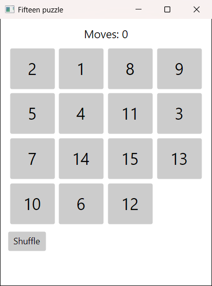
Fifteen Puzzle
Fifteen puzzle: slide the tiles into the empty cell to put the numbers in order
cd samples/UsingDotNet/tests/packages/AvaloniaSamples/apps/FifteenPuzzle then ring FifteenPuzzle.ringSource code
# Fifteen puzzle: slide the tiles into the empty cell to put the numbers in order
load "../../avalonia.ring"
avUse()
aBoard = list(16) # 0 is the empty cell
aButtons = []
nMoves = 0
oWindow = avWindow("Fifteen puzzle",340,430)
oPanel = avStack(8,12)
oWindow.Content = oPanel
oInfo = avText("")
oInfo.FontSize = 18
oInfo.HorizontalAlignment = "Center"
oGrid = new UniformGrid()
oGrid.Columns = 4
oGrid.Rows = 4
oGrid.Height = 290
for nCell = 1 to 16
oButton = avButton("","slide(" + nCell + ")")
oButton {
HorizontalAlignment = "Stretch"
VerticalAlignment = "Stretch"
HorizontalContentAlignment = "Center"
VerticalContentAlignment = "Center"
FontSize = 26
Margin = avThickness(3)
}
aButtons + oButton
oGrid.Children.Add(oButton)
next
oPanel {
Children.Add(oInfo)
Children.Add(oGrid)
Children.Add(avButton("Shuffle","shuffle()"))
}
solved()
shuffle()
avRun(oWindow)
# --------------------------------------------------------------------------
# the tiles in order
func solved
for nCell = 1 to 15
aBoard[nCell] = nCell
next
aBoard[16] = 0
nMoves = 0
showAll()
func emptyCell
return find(aBoard,0)
# the cells that touch a cell (the same row or the same column, one step away)
func isNear nCell, nOther
nColumn = (nCell - 1) % 4
nRow = floor((nCell - 1) / 4)
nOtherColumn = (nOther - 1) % 4
nOtherRow = floor((nOther - 1) / 4)
return fabs(nColumn - nOtherColumn) + fabs(nRow - nOtherRow) = 1
# a tile slides into the empty cell when it touches it
func slide nCell
nEmpty = emptyCell()
if isNear(nCell,nEmpty)
aBoard[nEmpty] = aBoard[nCell]
aBoard[nCell] = 0
nMoves++
showAll()
ok
# the board is shuffled by 200 legal slides, so that it can always be solved
func shuffle
solved()
for nTime = 1 to 200
nEmpty = emptyCell()
aNear = []
for nCell = 1 to 16
if isNear(nCell,nEmpty)
aNear + nCell
ok
next
nChosen = aNear[random(len(aNear) - 1) + 1]
aBoard[nEmpty] = aBoard[nChosen]
aBoard[nChosen] = 0
next
nMoves = 0
showAll()
func isSolved
for nCell = 1 to 15
if aBoard[nCell] != nCell
return False
ok
next
return True
func showAll
for nCell = 1 to 16
if aBoard[nCell] = 0
aButtons[nCell].Content = ""
aButtons[nCell].IsVisible = False
else
aButtons[nCell].Content = "" + aBoard[nCell]
aButtons[nCell].IsVisible = True
ok
next
if isSolved()
oInfo.Text = "Solved in " + nMoves + " moves!"
else
oInfo.Text = "Moves: " + nMoves
ok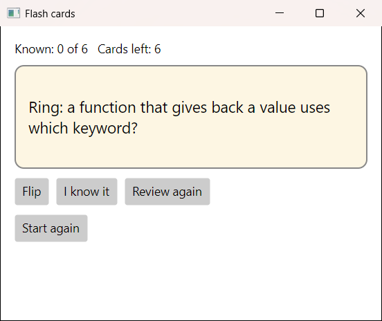
Flash Cards
Flash cards: a question on a card; Flip shows the answer; mark the card as known or to review; the known cards leave the pile
cd samples/UsingDotNet/tests/packages/AvaloniaSamples/apps/FlashCards then ring FlashCards.ringSource code
# Flash cards: a question on a card; Flip shows the answer; mark the card as known or to review; the known cards leave the pile
load "../../avalonia.ring"
avUse()
# [question, answer]
aCards = [
["Ring: a function that gives back a value uses which keyword?","return"],
["Ring: how do you start a comment?","With the # sign"],
["Ring: which keyword ends an if block?","ok"],
["Ring: the first item of a list has which index?","1"],
["Ring: how do you create an object of a class?","new ClassName"],
["Ring: which function gives the length of a list?","len()"]
]
aPile = [] # the numbers of the cards that are not known yet
nCurrent = 0
lShowingAnswer = False
nKnown = 0
oWindow = avWindow("Flash cards",440,340)
oPanel = avStack(10,16)
oWindow.Content = oPanel
oStatus = avText("")
oCard = new Border()
oCard {
Height = 120
Background = avBrush("#FDF6E3")
BorderBrush = avBrush("#888888")
BorderThickness = avThickness(2)
CornerRadius = (new CornerRadius).Parse("10")
Padding = avThickness(14)
}
oText = avText("")
oText.FontSize = 18
oText.TextWrapping = "Wrap"
oText.VerticalAlignment = "Center"
oCard.Child = oText
oFlip = avButton("Flip","flip()")
oKnown = avButton("I know it","known()")
oReview = avButton("Review again","review()")
oRow = avRow(8)
oRow {
Children.Add(oFlip)
Children.Add(oKnown)
Children.Add(oReview)
}
oPanel {
Children.Add(oStatus)
Children.Add(oCard)
Children.Add(oRow)
Children.Add(avButton("Start again","restart()"))
}
restart()
avRun(oWindow)
# --------------------------------------------------------------------------
func restart
aPile = []
for nCard = 1 to len(aCards)
aPile + nCard
next
nKnown = 0
nextCard()
# the next card of the pile (the first one)
func nextCard
lShowingAnswer = False
if len(aPile) = 0
oText.Text = "All cards are known!"
oStatus.Text = "Known: " + nKnown + " of " + len(aCards)
oFlip.IsEnabled = False
oKnown.IsEnabled = False
oReview.IsEnabled = False
return
ok
nCurrent = aPile[1]
oText.Text = aCards[nCurrent][1]
oStatus.Text = "Known: " + nKnown + " of " + len(aCards) + " Cards left: " + len(aPile)
oFlip.IsEnabled = True
oKnown.IsEnabled = True
oReview.IsEnabled = True
func flip
lShowingAnswer = not lShowingAnswer
if lShowingAnswer
oText.Text = aCards[nCurrent][2]
oCard.Background = avBrush("#E8F1F2")
else
oText.Text = aCards[nCurrent][1]
oCard.Background = avBrush("#FDF6E3")
ok
func known
del(aPile,1)
nKnown++
oCard.Background = avBrush("#FDF6E3")
nextCard()
# the card goes to the end of the pile
func review
nCard = aPile[1]
del(aPile,1)
aPile + nCard
oCard.Background = avBrush("#FDF6E3")
nextCard()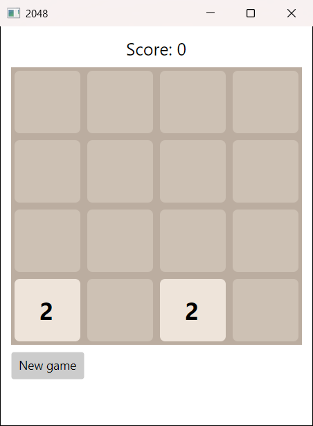
Game2048
2048: the arrow keys (or W A S D) slide the tiles; two equal tiles that meet join into one; reach 2048
cd samples/UsingDotNet/tests/packages/AvaloniaSamples/apps/Game2048 then ring Game2048.ringSource code
# 2048: the arrow keys (or W A S D) slide the tiles; two equal tiles that meet join into one; reach 2048
load "../../avalonia.ring"
avUse()
aBoard = list(16) # 0 is an empty cell
aTiles = []
nScore = 0
lSpawn = True # a new tile appears after a move (the checks turn this off)
aColors = ["#CDC1B4","#EEE4DA","#EDE0C8","#F2B179","#F59563","#F67C5F","#F65E3B","#EDCF72","#EDCC61","#EDC850","#EDC53F","#EDC22E"]
oWindow = avWindow("2048",360,460)
oPanel = avStack(8,12)
oWindow.Content = oPanel
oInfo = avText("")
oInfo.FontSize = 20
oInfo.HorizontalAlignment = "Center"
oGrid = new UniformGrid()
oGrid.Columns = 4
oGrid.Rows = 4
oGrid.Height = 320
oGrid.Background = avBrush("#BBADA0")
for nCell = 1 to 16
oTile = new Border()
oTile.Margin = avThickness(4)
oTile.CornerRadius = (new CornerRadius).Parse("6")
oLabel = avText("")
oLabel.FontSize = 28
oLabel.FontWeight = "Bold"
oLabel.HorizontalAlignment = "Center"
oLabel.VerticalAlignment = "Center"
oTile.Child = oLabel
aTiles + oTile
oGrid.Children.Add(oTile)
next
oPanel {
Children.Add(oInfo)
Children.Add(oGrid)
Children.Add(avButton("New game","newGame()"))
}
oWindow.setKeyDownEvent("keyDown(aDotNetArgs[2].Key)")
newGame()
avRun(oWindow)
# --------------------------------------------------------------------------
func newGame
for nCell = 1 to 16
aBoard[nCell] = 0
next
nScore = 0
addTile()
addTile()
showAll()
# a 2 (or a 4 now and then) in an empty cell
func addTile
if not lSpawn
return
ok
aEmpty = []
for nCell = 1 to 16
if aBoard[nCell] = 0
aEmpty + nCell
ok
next
if len(aEmpty) = 0
return
ok
nValue = 2
if random(9) = 0
nValue = 4
ok
aBoard[aEmpty[random(len(aEmpty) - 1) + 1]] = nValue
# a line of four cells slides to the left: [values, the points that the joins gave]
func slideLine aLine
aValues = []
for nValue in aLine
if nValue > 0
aValues + nValue
ok
next
aResult = []
nPoints = 0
nPosition = 1
while nPosition <= len(aValues)
if nPosition < len(aValues) and aValues[nPosition] = aValues[nPosition + 1]
aResult + (aValues[nPosition] * 2)
nPoints += aValues[nPosition] * 2
nPosition += 2
else
aResult + aValues[nPosition]
nPosition++
ok
end
while len(aResult) < 4
aResult + 0
end
return [aResult,nPoints]
# a move in a direction: left, right, up or down; true when something moved
func move cDirection
lMoved = False
for nLine = 1 to 4
aLine = lineCells(nLine,cDirection)
aValues = []
for nCell in aLine
aValues + aBoard[nCell]
next
aSlid = slideLine(aValues)
nIndex = 0
for nCell in aLine
nIndex++
if aBoard[nCell] != aSlid[1][nIndex]
lMoved = True
ok
aBoard[nCell] = aSlid[1][nIndex]
next
nScore += aSlid[2]
next
if lMoved
addTile()
ok
showAll()
return lMoved
# the four cells of a line in the order that they slide (the first cell is where the tiles go)
func lineCells nLine, cDirection
aCells = []
for nStep = 0 to 3
switch cDirection
on "Left"
aCells + ((nLine - 1) * 4 + nStep + 1)
on "Right"
aCells + ((nLine - 1) * 4 + 4 - nStep)
on "Up"
aCells + (nStep * 4 + nLine)
on "Down"
aCells + ((3 - nStep) * 4 + nLine)
off
next
return aCells
func keyDown cKey
cKey = "" + cKey
# the arrow keys, or W A S D
aNames = [["Left","A"],["Right","D"],["Up","W"],["Down","S"]]
for aName in aNames
if cKey = aName[1] or cKey = aName[2]
move(aName[1])
ok
next
func highest
nHighest = 0
for nValue in aBoard
nHighest = max(nHighest,nValue)
next
return nHighest
func canMove
for nCell = 1 to 16
if aBoard[nCell] = 0
return True
ok
if nCell % 4 != 0 and aBoard[nCell] = aBoard[nCell + 1]
return True
ok
if nCell <= 12 and aBoard[nCell] = aBoard[nCell + 4]
return True
ok
next
return False
func showAll
for nCell = 1 to 16
nValue = aBoard[nCell]
nColor = 1
if nValue > 0
nColor = min(12,floor(log(nValue) / log(2)) + 1)
ok
aTiles[nCell].Background = avBrush(aColors[nColor])
if nValue > 0
aTiles[nCell].Child.Text = "" + nValue
else
aTiles[nCell].Child.Text = ""
ok
next
if highest() >= 2048
oInfo.Text = "2048! Score: " + nScore
but not canMove()
oInfo.Text = "Game over. Score: " + nScore
else
oInfo.Text = "Score: " + nScore
ok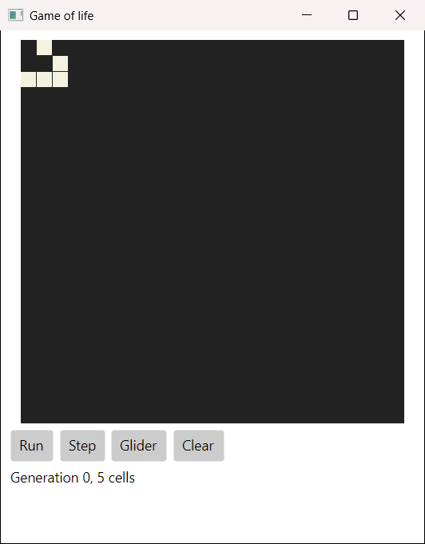
Game Of Life
The game of life: cells live or die by the number of living neighbors; click a cell to change it, press Run to watch the generations
cd samples/UsingDotNet/tests/packages/AvaloniaSamples/apps/GameOfLife then ring GameOfLife.ringSource code
# The game of life: cells live or die by the number of living neighbors; click a cell to change it, press Run to watch the generations
load "../../avalonia.ring"
avUse()
nSize = 24
nCell = 16
aCells = list(nSize * nSize) # 1 = alive
aShapes = []
nGeneration = 0
oWindow = avWindow("Game of life",nSize * nCell + 40,nSize * nCell + 130)
oPanel = avStack(6,10)
oWindow.Content = oPanel
oCanvas = new Canvas()
oCanvas {
Width = nSize * nCell
Height = nSize * nCell
Background = avBrush("#222222")
setPointerPressedEvent("pressed(aDotNetArgs[2].GetPosition(oCanvas))")
}
for nIndex = 1 to nSize * nSize
aCells[nIndex] = 0
oShape = new Rectangle()
oShape.Width = nCell - 1
oShape.Height = nCell - 1
oShape.Fill = avBrush("#222222")
oCanvas.SetLeft(oShape,((nIndex - 1) % nSize) * nCell)
oCanvas.SetTop(oShape,floor((nIndex - 1) / nSize) * nCell)
oCanvas.Children.Add(oShape)
aShapes + oShape
next
oInfo = avText("Generation 0, 0 cells")
oRun = avButton("Run","toggleRun()")
oBar = avRow(6)
oBar {
Children.Add(oRun)
Children.Add(avButton("Step","nextGeneration()"))
Children.Add(avButton("Glider","glider()"))
Children.Add(avButton("Clear","clear()"))
}
oPanel {
Children.Add(oCanvas)
Children.Add(oBar)
Children.Add(oInfo)
}
oTimer = new DispatcherTimer()
oTimer.Interval = dnStatic("System.TimeSpan","FromMilliseconds",[150])
oTimer.setTickEvent("nextGeneration()")
glider()
avRun(oWindow)
# --------------------------------------------------------------------------
# the position of a click is a cell
func pressed oPosition
nColumn = floor(oPosition.X / nCell)
nRow = floor(oPosition.Y / nCell)
if nColumn >= 0 and nColumn < nSize and nRow >= 0 and nRow < nSize
toggle(nRow * nSize + nColumn + 1)
ok
func toggle nIndex
aCells[nIndex] = 1 - aCells[nIndex]
paint(nIndex)
count()
# a cell is drawn white when it is alive
func paint nIndex
if aCells[nIndex] = 1
aShapes[nIndex].Fill = avBrush("#F4F1DE")
else
aShapes[nIndex].Fill = avBrush("#222222")
ok
func count
nAlive = 0
for nValue in aCells
nAlive += nValue
next
oInfo.Text = "Generation " + nGeneration + ", " + nAlive + " cells"
return nAlive
# the living neighbors of a cell (the world has no edge: the left side is next to the right side)
func neighbors nIndex
nColumn = (nIndex - 1) % nSize
nRow = floor((nIndex - 1) / nSize)
nTotal = 0
for nDy = -1 to 1
for nDx = -1 to 1
if not (nDx = 0 and nDy = 0)
nOtherColumn = (nColumn + nDx + nSize) % nSize
nOtherRow = (nRow + nDy + nSize) % nSize
nTotal += aCells[nOtherRow * nSize + nOtherColumn + 1]
ok
next
next
return nTotal
# the next generation
func nextGeneration
aNext = list(nSize * nSize)
for nIndex = 1 to nSize * nSize
nNear = neighbors(nIndex)
if aCells[nIndex] = 1
aNext[nIndex] = (nNear = 2 or nNear = 3)
else
aNext[nIndex] = (nNear = 3)
ok
next
for nIndex = 1 to nSize * nSize
if aNext[nIndex] != aCells[nIndex]
aCells[nIndex] = aNext[nIndex]
paint(nIndex)
ok
next
nGeneration++
count()
func clear
for nIndex = 1 to nSize * nSize
if aCells[nIndex] = 1
aCells[nIndex] = 0
paint(nIndex)
ok
next
nGeneration = 0
count()
func glider
clear()
for aPoint in [[2,1],[3,2],[1,3],[2,3],[3,3]]
toggle((aPoint[2] - 1) * nSize + aPoint[1])
next
func toggleRun
if oTimer.IsEnabled
oTimer.Stop()
oRun.Content = "Run"
else
oTimer.Start()
oRun.Content = "Stop"
ok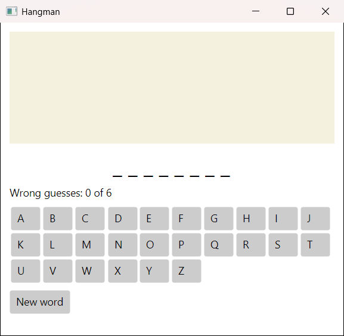
Hangman
Hangman: guess the word letter by letter; each wrong letter adds a part to the drawing
cd samples/UsingDotNet/tests/packages/AvaloniaSamples/apps/Hangman then ring Hangman.ringSource code
# Hangman: guess the word letter by letter; each wrong letter adds a part to the drawing
load "../../avalonia.ring"
avUse()
aWords = ["RING","AVALONIA","PROGRAM","WINDOW","BUTTON","KEYBOARD","FUNCTION","DOTNET"]
cWord = ""
cGuessed = ""
nWrong = 0
nMaxWrong = 6
oWindow = avWindow("Hangman",460,420)
oPanel = avStack(8,12)
oWindow.Content = oPanel
oCanvas = new Canvas()
oCanvas.Height = 150
oCanvas.Background = avBrush("#F4F1DE")
aParts = []
addPart(new Ellipse(),"head",110,20,40,40)
addPart(new Rectangle(),"body",127,60,6,50)
addPart(new Rectangle(),"left arm",100,70,30,5)
addPart(new Rectangle(),"right arm",130,70,30,5)
addPart(new Rectangle(),"left leg",110,110,5,35)
addPart(new Rectangle(),"right leg",145,110,5,35)
oWordText = avText("")
oWordText.FontSize = 30
oWordText.HorizontalAlignment = "Center"
oStatus = avText("")
oLetters = new WrapPanel()
aLetters = []
for nLetter = 65 to 90
cLetter = char(nLetter)
oKey = avButton(cLetter,"guess('" + cLetter + "')")
oKey.Width = 40
oKey.Margin = avThickness(2)
oLetters.Children.Add(oKey)
aLetters + oKey
next
oPanel {
Children.Add(oCanvas)
Children.Add(oWordText)
Children.Add(oStatus)
Children.Add(oLetters)
Children.Add(avButton("New word","newGame()"))
}
newGame()
avRun(oWindow)
# --------------------------------------------------------------------------
# a part of the drawing (a shape that shows when a wrong letter is guessed)
func addPart oShape, cName, nX, nY, nWidth, nHeight
oShape.Width = nWidth
oShape.Height = nHeight
oShape.Fill = avBrush("#3D405B")
oShape.IsVisible = False
oCanvas.SetLeft(oShape,nX)
oCanvas.SetTop(oShape,nY)
oCanvas.Children.Add(oShape)
aParts + oShape
func newGame
cWord = aWords[random(len(aWords) - 1) + 1]
startWord(cWord)
func startWord cNewWord
cWord = cNewWord
cGuessed = ""
nWrong = 0
for oPart in aParts
oPart.IsVisible = False
next
for oKey in aLetters
oKey.IsEnabled = True
next
show()
# the word with _ for the letters that are not guessed yet
func shown
cText = ""
for cChar in cWord
if substr(cGuessed,cChar) > 0
cText += cChar + " "
else
cText += "_ "
ok
next
return trim(cText)
func guess cLetter
if isOver() or substr(cGuessed,cLetter) > 0
return
ok
cGuessed += cLetter
aLetters[ascii(cLetter) - 64].IsEnabled = False
if substr(cWord,cLetter) = 0
nWrong++
aParts[nWrong].IsVisible = True
ok
show()
func isWon
return substr(shown(),"_") = 0
func isOver
return nWrong >= nMaxWrong or isWon()
func show
oWordText.Text = shown()
if isWon()
oStatus.Text = "You won!"
but nWrong >= nMaxWrong
oStatus.Text = "You lost: the word was " + cWord
else
oStatus.Text = "Wrong guesses: " + nWrong + " of " + nMaxWrong
ok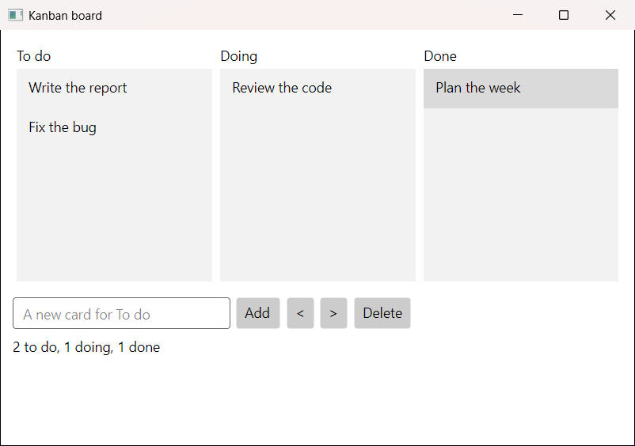
Kanban Board
A kanban board: three columns (To do, Doing, Done) with cards; add a card, move the selected card to the next or the previous column
cd samples/UsingDotNet/tests/packages/AvaloniaSamples/apps/KanbanBoard then ring KanbanBoard.ringSource code
# A kanban board: three columns (To do, Doing, Done) with cards; add a card, move the selected card to the next or the previous column
load "../../avalonia.ring"
avUse()
aNames = ["To do","Doing","Done"]
aColumns = [["Write the report","Fix the bug"],["Review the code"],["Plan the week"]]
aLists = []
nActive = 0 # the column of the selected card
oWindow = avWindow("Kanban board",640,420)
oPanel = avStack(8,12)
oWindow.Content = oPanel
oGrid = new Grid()
oGrid.ColumnDefinitions = (new ColumnDefinitions).Parse("*,*,*")
oGrid.Height = 250
for nColumn = 1 to 3
oColumn = avStack(4,4)
oColumn.Children.Add(avText(aNames[nColumn]))
oList = new ListBox()
oList.Height = 215
oList.setSelectionChangedEvent("selected(" + nColumn + ")")
oColumn.Children.Add(oList)
oGrid.SetColumn(oColumn,nColumn - 1)
oGrid.Children.Add(oColumn)
aLists + oList
next
oNew = new TextBox()
oNew.Watermark = "A new card for To do"
oNew.Width = 220
oRow = avRow(6)
oRow {
Children.Add(oNew)
Children.Add(avButton("Add","addCard()"))
Children.Add(avButton("<","moveCard(-1)"))
Children.Add(avButton(">","moveCard(1)"))
Children.Add(avButton("Delete","deleteCard()"))
}
oInfo = avText("")
oPanel {
Children.Add(oGrid)
Children.Add(oRow)
Children.Add(oInfo)
}
showAll()
avRun(oWindow)
# --------------------------------------------------------------------------
func showAll
for nColumn = 1 to 3
aLists[nColumn].Items.Clear()
for cCard in aColumns[nColumn]
aLists[nColumn].Items.Add(cCard)
next
next
oInfo.Text = "" + len(aColumns[1]) + " to do, " + len(aColumns[2]) + " doing, " + len(aColumns[3]) + " done"
# a card was selected: the other columns have no selection
func selected nColumn
if aLists[nColumn].SelectedIndex < 0
return
ok
nActive = nColumn
for nOther = 1 to 3
if nOther != nColumn and aLists[nOther].SelectedIndex >= 0
aLists[nOther].UnselectAll()
ok
next
func addCard
cText = oNew.Text
if isstring(cText) and trim(cText) != ""
aColumns[1] + trim(cText)
oNew.Text = ""
showAll()
ok
# the selected card moves to the next column (1) or the previous one (-1)
func moveCard nStep
if nActive = 0
return
ok
nCard = aLists[nActive].SelectedIndex + 1
nTarget = nActive + nStep
if nCard < 1 or nTarget < 1 or nTarget > 3
return
ok
cCard = aColumns[nActive][nCard]
del(aColumns[nActive],nCard)
aColumns[nTarget] + cCard
nActive = 0
showAll()
func deleteCard
if nActive = 0
return
ok
nCard = aLists[nActive].SelectedIndex + 1
if nCard >= 1
del(aColumns[nActive],nCard)
nActive = 0
showAll()
ok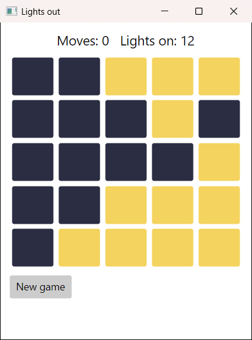
Lights Out
Lights out: a press toggles the cell and its four neighbors; turn all the lights off
cd samples/UsingDotNet/tests/packages/AvaloniaSamples/apps/LightsOut then ring LightsOut.ringSource code
# Lights out: a press toggles the cell and its four neighbors; turn all the lights off
load "../../avalonia.ring"
avUse()
nSize = 5
aLights = list(nSize * nSize) # 1 = on
aButtons = []
nMoves = 0
oWindow = avWindow("Lights out",340,430)
oPanel = avStack(8,12)
oWindow.Content = oPanel
oInfo = avText("")
oInfo.FontSize = 18
oInfo.HorizontalAlignment = "Center"
oGrid = new UniformGrid()
oGrid.Columns = nSize
oGrid.Rows = nSize
oGrid.Height = 290
for nCell = 1 to nSize * nSize
oButton = avButton("","press(" + nCell + ")")
oButton {
HorizontalAlignment = "Stretch"
VerticalAlignment = "Stretch"
Margin = avThickness(3)
}
aButtons + oButton
oGrid.Children.Add(oButton)
next
oPanel {
Children.Add(oInfo)
Children.Add(oGrid)
Children.Add(avButton("New game","newGame()"))
}
newGame()
avRun(oWindow)
# --------------------------------------------------------------------------
# a game is made by pressing cells at random from the solved board, so it can always be solved
func newGame
for nCell = 1 to nSize * nSize
aLights[nCell] = 0
next
nMoves = 0
while lightsOn() < 5
toggleAround(random(nSize * nSize - 1) + 1)
toggleAround(random(nSize * nSize - 1) + 1)
toggleAround(random(nSize * nSize - 1) + 1)
end
showAll()
# a cell and its neighbors change
func toggleAround nCell
nColumn = (nCell - 1) % nSize
nRow = floor((nCell - 1) / nSize)
for aOffset in [[0,0],[1,0],[-1,0],[0,1],[0,-1]]
nC = nColumn + aOffset[1]
nR = nRow + aOffset[2]
if nC >= 0 and nC < nSize and nR >= 0 and nR < nSize
nIndex = nR * nSize + nC + 1
aLights[nIndex] = 1 - aLights[nIndex]
ok
next
func lightsOn
nOn = 0
for nValue in aLights
nOn += nValue
next
return nOn
func press nCell
if lightsOn() = 0
return
ok
toggleAround(nCell)
nMoves++
showAll()
func showAll
for nCell = 1 to nSize * nSize
if aLights[nCell] = 1
aButtons[nCell].Background = avBrush("#F4D35E")
else
aButtons[nCell].Background = avBrush("#2B2D42")
ok
next
if lightsOn() = 0
oInfo.Text = "Solved in " + nMoves + " moves!"
else
oInfo.Text = "Moves: " + nMoves + " Lights on: " + lightsOn()
ok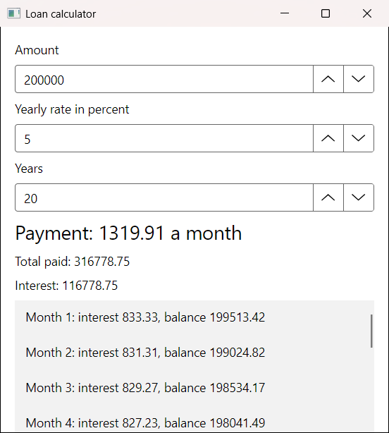
Loan Calculator
Loan calculator: the amount, the yearly rate and the years give the monthly payment, the total and the interest; a table of the first months
cd samples/UsingDotNet/tests/packages/AvaloniaSamples/apps/LoanCalculator then ring LoanCalculator.ringSource code
# Loan calculator: the amount, the yearly rate and the years give the monthly payment, the total and the interest; a table of the first months
load "../../avalonia.ring"
avUse()
oWindow = avWindow("Loan calculator",440,460)
oPanel = avStack(8,16)
oWindow.Content = oPanel
oAmount = box(200000,1000,10000000,1000)
oRate = box(5,0,30,0.25)
oYears = box(20,1,40,1)
oPayment = avText("")
oPayment.FontSize = 22
oTotal = avText("")
oInterest = avText("")
oTable = new ListBox()
oTable.Height = 150
oPanel {
Children.Add(avText("Amount"))
Children.Add(oAmount)
Children.Add(avText("Yearly rate in percent"))
Children.Add(oRate)
Children.Add(avText("Years"))
Children.Add(oYears)
Children.Add(oPayment)
Children.Add(oTotal)
Children.Add(oInterest)
Children.Add(oTable)
}
calculate()
avRun(oWindow)
# --------------------------------------------------------------------------
func box nValue, nMinimum, nMaximum, nStep
oBox = new NumericUpDown()
oBox {
Minimum = nMinimum
Maximum = nMaximum
Increment = nStep
Value = nValue
setValueChangedEvent("calculate()")
}
return oBox
# a number with two decimals
func money nValue
return "" + (floor(nValue * 100 + 0.5) / 100)
# the monthly payment of a loan with a fixed rate
func monthlyPayment nAmount, nYearlyRate, nYears
nMonths = nYears * 12
if nYearlyRate = 0
return nAmount / nMonths
ok
nMonthly = nYearlyRate / 100 / 12
return nAmount * nMonthly / (1 - pow(1 + nMonthly,-nMonths))
func calculate
if not isobject(oTable)
return
ok
nPayment = monthlyPayment(oAmount.Value,oRate.Value,oYears.Value)
nMonths = oYears.Value * 12
oPayment.Text = "Payment: " + money(nPayment) + " a month"
oTotal.Text = "Total paid: " + money(nPayment * nMonths)
oInterest.Text = "Interest: " + money(nPayment * nMonths - oAmount.Value)
oTable.Items.Clear()
nBalance = oAmount.Value
nMonthly = oRate.Value / 100 / 12
for nMonth = 1 to 12
nInterestPart = nBalance * nMonthly
nBalance = nBalance - (nPayment - nInterestPart)
oTable.Items.Add("Month " + nMonth + ": interest " + money(nInterestPart) + ", balance " + money(nBalance))
next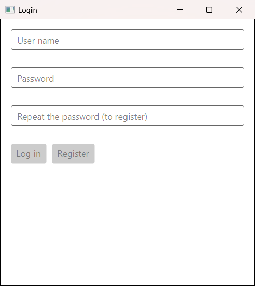
Login Form
A login and registration form with validation: the rules are checked as you type and the button is enabled only when all of them are met
cd samples/UsingDotNet/tests/packages/AvaloniaSamples/apps/LoginForm then ring LoginForm.ringSource code
# A login and registration form with validation: the rules are checked as you type and the button is enabled only when all of them are met
load "../../avalonia.ring"
avUse()
aUsers = [["admin","Secret123"]] # [name, password]
lLoggedIn = False
oWindow = avWindow("Login",400,420)
oPanel = avStack(6,16)
oWindow.Content = oPanel
oName = new TextBox()
oName.Watermark = "User name"
oName.setTextChangedEvent("validate()")
oNameError = error()
oPassword = new TextBox()
oPassword.PasswordChar = "*"
oPassword.Watermark = "Password"
oPassword.setTextChangedEvent("validate()")
oPasswordError = error()
oRepeat = new TextBox()
oRepeat.PasswordChar = "*"
oRepeat.Watermark = "Repeat the password (to register)"
oRepeat.setTextChangedEvent("validate()")
oRepeatError = error()
oLogin = avButton("Log in","login()")
oRegister = avButton("Register","register()")
oMessage = avText("")
oMessage.FontSize = 16
oRow = avRow(8)
oRow {
Children.Add(oLogin)
Children.Add(oRegister)
}
oPanel {
Children.Add(oName)
Children.Add(oNameError)
Children.Add(oPassword)
Children.Add(oPasswordError)
Children.Add(oRepeat)
Children.Add(oRepeatError)
Children.Add(oRow)
Children.Add(oMessage)
}
validate()
avRun(oWindow)
# --------------------------------------------------------------------------
# a red text for the message of a rule that is not met
func error
oText = avText("")
oText.Foreground = avBrush("#C73E1D")
oText.FontSize = 12
return oText
func textOf oBox
cText = oBox.Text
if isstring(cText)
return cText
ok
return ""
# the problem of a user name ("" when it is fine): at least 3 letters or digits
func nameProblem cName
if len(cName) < 3
return "The name needs at least 3 characters"
ok
for cChar in cName
if not (isalpha(cChar) or isdigit(cChar) or cChar = "_")
return "Use letters, digits and _ only"
ok
next
return ""
# the problem of a password: 8 characters, a capital letter and a digit
func passwordProblem cPassword
if len(cPassword) < 8
return "The password needs at least 8 characters"
ok
if cPassword = lower(cPassword)
return "The password needs a capital letter"
ok
lDigit = False
for cChar in cPassword
if isdigit(cChar)
lDigit = True
ok
next
if not lDigit
return "The password needs a digit"
ok
return ""
func userIndex cName
for nUser = 1 to len(aUsers)
if aUsers[nUser][1] = cName
return nUser
ok
next
return 0
func validate
if not isobject(oMessage)
return
ok
cName = textOf(oName)
cPassword = textOf(oPassword)
cRepeat = textOf(oRepeat)
oNameError.Text = ""
oPasswordError.Text = ""
oRepeatError.Text = ""
if cName != ""
oNameError.Text = nameProblem(cName)
ok
if cPassword != ""
oPasswordError.Text = passwordProblem(cPassword)
ok
if cRepeat != "" and cRepeat != cPassword
oRepeatError.Text = "The passwords are not the same"
ok
oLogin.IsEnabled = cName != "" and cPassword != ""
oRegister.IsEnabled = nameProblem(cName) = "" and passwordProblem(cPassword) = "" and cRepeat = cPassword
func login
nUser = userIndex(textOf(oName))
if nUser > 0 and aUsers[nUser][2] = textOf(oPassword)
lLoggedIn = True
oMessage.Text = "Welcome, " + textOf(oName) + "!"
else
lLoggedIn = False
oMessage.Text = "Wrong name or password"
ok
func register
if userIndex(textOf(oName)) > 0
oMessage.Text = "That name is taken"
return
ok
aUsers + [textOf(oName),textOf(oPassword)]
oMessage.Text = "Registered " + textOf(oName) + ": " + len(aUsers) + " users"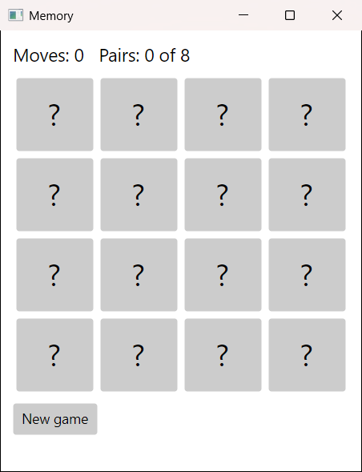
Memory Game
Memory game: eight pairs of cards face down; turn two at a time, a pair stays open; the moves are counted
cd samples/UsingDotNet/tests/packages/AvaloniaSamples/apps/MemoryGame then ring MemoryGame.ringSource code
# Memory game: eight pairs of cards face down; turn two at a time, a pair stays open; the moves are counted
load "../../avalonia.ring"
avUse()
aSymbols = ["A","B","C","D","E","F","G","H"]
aCards = [] # the symbol of each of the 16 cards
aOpen = [] # the cards that are turned now (at most two)
aFound = list(16) # 1 when the card belongs to a pair that was found
nMoves = 0
nPairs = 0
oWindow = avWindow("Memory",360,440)
oPanel = avStack(8,12)
oWindow.Content = oPanel
oInfo = avText("")
oInfo.FontSize = 18
oGrid = new UniformGrid()
oGrid.Columns = 4
oGrid.Rows = 4
oGrid.Height = 320
aButtons = []
for nCard = 1 to 16
oCard = avButton("?","flip(" + nCard + ")")
oCard {
HorizontalAlignment = "Stretch"
VerticalAlignment = "Stretch"
HorizontalContentAlignment = "Center"
VerticalContentAlignment = "Center"
FontSize = 30
Margin = avThickness(3)
}
aButtons + oCard
oGrid.Children.Add(oCard)
next
oPanel {
Children.Add(oInfo)
Children.Add(oGrid)
Children.Add(avButton("New game","newGame()"))
}
newGame()
avRun(oWindow)
# --------------------------------------------------------------------------
func newGame
aCards = []
for cSymbol in aSymbols
aCards + cSymbol
aCards + cSymbol
next
shuffle()
deal()
# the cards in a random order
func shuffle
for nCard = 16 to 2 step -1
nOther = random(nCard - 1) + 1
cTemp = aCards[nCard]
aCards[nCard] = aCards[nOther]
aCards[nOther] = cTemp
next
# the cards face down, the counters at zero
func deal
aOpen = []
nMoves = 0
nPairs = 0
for nCard = 1 to 16
aFound[nCard] = 0
aButtons[nCard].Content = "?"
aButtons[nCard].IsEnabled = True
next
show()
# the player turns a card
func flip nCard
if aFound[nCard] = 1 or find(aOpen,nCard) > 0
return
ok
if len(aOpen) = 2
closeCards()
ok
aButtons[nCard].Content = aCards[nCard]
aOpen + nCard
if len(aOpen) = 2
nMoves++
if aCards[aOpen[1]] = aCards[aOpen[2]]
for nPair in aOpen
aFound[nPair] = 1
aButtons[nPair].IsEnabled = False
next
nPairs++
aOpen = []
ok
ok
show()
# the two cards that do not match are turned face down
func closeCards
for nPair in aOpen
aButtons[nPair].Content = "?"
next
aOpen = []
func show
if nPairs = 8
oInfo.Text = "You won in " + nMoves + " moves!"
else
oInfo.Text = "Moves: " + nMoves + " Pairs: " + nPairs + " of 8"
ok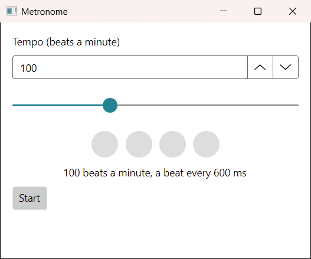
Metronome
Metronome: a tempo from 40 to 220 beats a minute, a light that moves with each beat and the beats of a bar (the first one is the accent)
cd samples/UsingDotNet/tests/packages/AvaloniaSamples/apps/Metronome then ring Metronome.ringSource code
# Metronome: a tempo from 40 to 220 beats a minute, a light that moves with each beat and the beats of a bar (the first one is the accent)
load "../../avalonia.ring"
avUse()
nTempo = 100
nBeat = 0
nBeatsInBar = 4
oWindow = avWindow("Metronome",420,320)
oPanel = avStack(10,16)
oWindow.Content = oPanel
oTempo = new NumericUpDown()
oTempo {
Minimum = 40
Maximum = 220
Value = 100
setValueChangedEvent("tempoChanged()")
}
oSlider = new Slider()
oSlider {
Minimum = 40
Maximum = 220
Value = 100
setValueChangedEvent("sliderMoved()")
}
oLights = avRow(10)
oLights.HorizontalAlignment = "Center"
aLights = []
for nLight = 1 to nBeatsInBar
oLight = new Ellipse()
oLight.Width = 36
oLight.Height = 36
oLights.Children.Add(oLight)
aLights + oLight
next
oInfo = avText("")
oInfo.HorizontalAlignment = "Center"
oStart = avButton("Start","startStop()")
oPanel {
Children.Add(avText("Tempo (beats a minute)"))
Children.Add(oTempo)
Children.Add(oSlider)
Children.Add(oLights)
Children.Add(oInfo)
Children.Add(oStart)
}
oTimer = new DispatcherTimer()
oTimer.setTickEvent("beat()")
tempoChanged()
showLights()
avRun(oWindow)
# --------------------------------------------------------------------------
# the milliseconds between two beats
func interval nBeatsAMinute
return floor(60000 / nBeatsAMinute)
func tempoChanged
if not isobject(oInfo)
return
ok
nTempo = floor(oTempo.Value)
oSlider.Value = nTempo
oTimer.Interval = dnStatic("System.TimeSpan","FromMilliseconds",[interval(nTempo)])
oInfo.Text = "" + nTempo + " beats a minute, a beat every " + interval(nTempo) + " ms"
func sliderMoved
if isobject(oTempo) and floor(oSlider.Value) != floor(oTempo.Value)
oTempo.Value = floor(oSlider.Value)
ok
func showLights
for nLight = 1 to nBeatsInBar
if nLight = nBeat and nBeat = 1
aLights[nLight].Fill = avBrush("#E63946")
but nLight = nBeat
aLights[nLight].Fill = avBrush("#2A9D8F")
else
aLights[nLight].Fill = avBrush("#DDDDDD")
ok
next
func beat
nBeat++
if nBeat > nBeatsInBar
nBeat = 1
ok
showLights()
func startStop
if oTimer.IsEnabled
oTimer.Stop()
oStart.Content = "Start"
nBeat = 0
showLights()
else
oTimer.Start()
oStart.Content = "Stop"
ok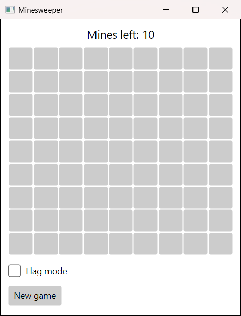
Minesweeper
Minesweeper: open the cells without a mine; a number tells how many mines touch the cell; the Flag check box marks the cells that you think have a mine
cd samples/UsingDotNet/tests/packages/AvaloniaSamples/apps/Minesweeper then ring Minesweeper.ringSource code
# Minesweeper: open the cells without a mine; a number tells how many mines touch the cell; the Flag check box marks the cells that you think have a mine
load "../../avalonia.ring"
avUse()
nColumns = 9
nRows = 9
nMines = 10
aMine = list(nColumns * nRows) # 1 = a mine
aOpen = list(nColumns * nRows) # 1 = opened
aFlag = list(nColumns * nRows) # 1 = flagged
aButtons = []
lOver = False
lFirst = True # the mines are placed at the first click, so the first cell is never a mine
oWindow = avWindow("Minesweeper",380,470)
oPanel = avStack(8,12)
oWindow.Content = oPanel
oInfo = avText("")
oInfo.FontSize = 18
oInfo.HorizontalAlignment = "Center"
oGrid = new UniformGrid()
oGrid.Columns = nColumns
oGrid.Rows = nRows
oGrid.Height = 330
for nCell = 1 to nColumns * nRows
oButton = avButton("","click(" + nCell + ")")
oButton {
HorizontalAlignment = "Stretch"
VerticalAlignment = "Stretch"
HorizontalContentAlignment = "Center"
VerticalContentAlignment = "Center"
Padding = avThickness(0)
Margin = avThickness(1)
FontWeight = "Bold"
}
aButtons + oButton
oGrid.Children.Add(oButton)
next
oFlag = new CheckBox()
oFlag.Content = "Flag mode"
oPanel {
Children.Add(oInfo)
Children.Add(oGrid)
Children.Add(oFlag)
Children.Add(avButton("New game","newGame()"))
}
newGame()
avRun(oWindow)
# --------------------------------------------------------------------------
func newGame
for nCell = 1 to nColumns * nRows
aMine[nCell] = 0
aOpen[nCell] = 0
aFlag[nCell] = 0
next
lOver = False
lFirst = True
showAll()
# the mines go to random cells that are not the first cell
func placeMines nAvoid
nPlaced = 0
while nPlaced < nMines
nCell = random(nColumns * nRows - 1) + 1
if aMine[nCell] = 0 and nCell != nAvoid
aMine[nCell] = 1
nPlaced++
ok
end
# the cells around a cell
func around nCell
nColumn = (nCell - 1) % nColumns
nRow = floor((nCell - 1) / nColumns)
aNear = []
for nDy = -1 to 1
for nDx = -1 to 1
if not (nDx = 0 and nDy = 0)
nC = nColumn + nDx
nR = nRow + nDy
if nC >= 0 and nC < nColumns and nR >= 0 and nR < nRows
aNear + (nR * nColumns + nC + 1)
ok
ok
next
next
return aNear
# the number of mines around a cell
func minesAround nCell
nCount = 0
for nNear in around(nCell)
nCount += aMine[nNear]
next
return nCount
func click nCell
if lOver or aOpen[nCell] = 1
return
ok
if oFlag.IsChecked
aFlag[nCell] = 1 - aFlag[nCell]
showAll()
return
ok
if aFlag[nCell] = 1
return
ok
if lFirst
placeMines(nCell)
lFirst = False
ok
openCell(nCell)
if aMine[nCell] = 1
lOver = True
ok
showAll()
# a cell opens; a cell with no mine around opens its neighbors too
func openCell nCell
aStack = [nCell]
while len(aStack) > 0
nOne = aStack[len(aStack)]
del(aStack,len(aStack))
if aOpen[nOne] = 0 and aFlag[nOne] = 0
aOpen[nOne] = 1
if aMine[nOne] = 0 and minesAround(nOne) = 0
for nNear in around(nOne)
if aOpen[nNear] = 0
aStack + nNear
ok
next
ok
ok
end
func closedSafe
nCount = 0
for nCell = 1 to nColumns * nRows
if aOpen[nCell] = 0 and aMine[nCell] = 0
nCount++
ok
next
return nCount
func isWon
return not lFirst and not lOver and closedSafe() = 0
func showAll
for nCell = 1 to nColumns * nRows
oButton = aButtons[nCell]
if aOpen[nCell] = 1
oButton.IsEnabled = False
if aMine[nCell] = 1
oButton.Content = "*"
oButton.Background = avBrush("#E63946")
else
nNear = minesAround(nCell)
if nNear > 0
oButton.Content = "" + nNear
else
oButton.Content = ""
ok
ok
else
oButton.IsEnabled = True
if lOver and aMine[nCell] = 1
oButton.Content = "*"
but aFlag[nCell] = 1
oButton.Content = "F"
else
oButton.Content = ""
ok
ok
next
nFlags = 0
for nValue in aFlag
nFlags += nValue
next
if lOver
oInfo.Text = "Boom! Game over"
but isWon()
oInfo.Text = "You cleared the field!"
else
oInfo.Text = "Mines left: " + (nMines - nFlags)
ok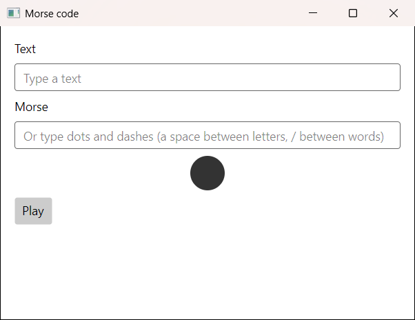
Morse Code
Morse code: a text becomes dots and dashes and back; the Play button shows the signal on a light that goes on and off with a timer
cd samples/UsingDotNet/tests/packages/AvaloniaSamples/apps/MorseCode then ring MorseCode.ringSource code
# Morse code: a text becomes dots and dashes and back; the Play button shows the signal on a light that goes on and off with a timer
load "../../avalonia.ring"
avUse()
aLetters = ["A",".-","B","-...","C","-.-.","D","-..","E",".","F","..-.","G","--.","H","....","I","..","J",".---","K","-.-","L",".-..","M","--",
"N","-.","O","---","P",".--.","Q","--.-","R",".-.","S","...","T","-","U","..-","V","...-","W",".--","X","-..-","Y","-.--","Z","--..",
"0","-----","1",".----","2","..---","3","...--","4","....-","5",".....","6","-....","7","--...","8","---..","9","----."]
aSignal = [] # the steps of the light: 1 on, 0 off, one for each unit of time
nStep = 0
lBusy = False
oWindow = avWindow("Morse code",480,340)
oPanel = avStack(8,16)
oWindow.Content = oPanel
oText = new TextBox()
oText.Watermark = "Type a text"
oText.setTextChangedEvent("textChanged()")
oMorse = new TextBox()
oMorse.Watermark = "Or type dots and dashes (a space between letters, / between words)"
oMorse.setTextChangedEvent("morseChanged()")
oLight = new Ellipse()
oLight.Width = 40
oLight.Height = 40
oLight.Fill = avBrush("#333333")
oLight.HorizontalAlignment = "Center"
oPanel {
Children.Add(avText("Text"))
Children.Add(oText)
Children.Add(avText("Morse"))
Children.Add(oMorse)
Children.Add(oLight)
Children.Add(avButton("Play","play()"))
}
oTimer = new DispatcherTimer()
oTimer.Interval = dnStatic("System.TimeSpan","FromMilliseconds",[100])
oTimer.setTickEvent("stepLight()")
avRun(oWindow)
# --------------------------------------------------------------------------
func codeOf cLetter
nAt = find(aLetters,upper(cLetter))
if nAt > 0 and nAt % 2 = 1
return aLetters[nAt + 1]
ok
return ""
func letterOf cCode
for nAt = 2 to len(aLetters) step 2
if aLetters[nAt] = cCode
return aLetters[nAt - 1]
ok
next
return "?"
# a text as Morse code: letters apart by a space, words by /
func toMorse cText
cResult = ""
for cChar in cText
if cChar = " "
cResult += " / "
else
cCode = codeOf(cChar)
if cCode != ""
if cResult != "" and right(cResult,1) != " "
cResult += " "
ok
cResult += cCode
ok
ok
next
return trim(cResult)
func fromMorse cMorse
cResult = ""
for cWord in str2list(substr(cMorse," / ",nl))
if cResult != ""
cResult += " "
ok
for cCode in str2list(substr(trim(cWord)," ",nl))
if cCode != ""
cResult += letterOf(cCode)
ok
next
next
return cResult
func textOf oBox
cText = oBox.Text
if isstring(cText)
return cText
ok
return ""
func textChanged
if not lBusy
lBusy = True
oMorse.Text = toMorse(textOf(oText))
lBusy = False
ok
func morseChanged
if not lBusy
lBusy = True
oText.Text = fromMorse(textOf(oMorse))
lBusy = False
ok
# the light: a dot is one unit on, a dash three, one unit off between signs, three between letters, seven between words
func signalOf cMorse
aSteps = []
nSigns = len(cMorse)
for nSign = 1 to nSigns
cSign = cMorse[nSign]
if cSign = "."
aSteps + 1
aSteps + 0
but cSign = "-"
aSteps + 1
aSteps + 1
aSteps + 1
aSteps + 0
but cSign = " " and cMorse[nSign + 1] != "/" and cMorse[nSign - 1] != "/"
aSteps + 0
aSteps + 0
but cSign = "/"
for nGap = 1 to 4
aSteps + 0
next
ok
next
return aSteps
func play
aSignal = signalOf(textOf(oMorse))
nStep = 0
if len(aSignal) > 0
oTimer.Start()
ok
func stepLight
nStep++
if nStep > len(aSignal)
oTimer.Stop()
oLight.Fill = avBrush("#333333")
return
ok
if aSignal[nStep] = 1
oLight.Fill = avBrush("#FFD93D")
else
oLight.Fill = avBrush("#333333")
ok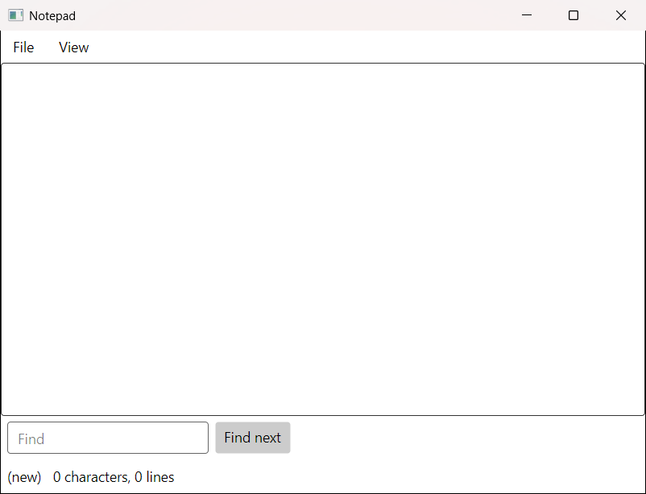
Notepad
Notepad: a text editor with a menu (new, open, save, quit; cut, find; word wrap), a status bar and a find box; files are read and written with Ring
cd samples/UsingDotNet/tests/packages/AvaloniaSamples/apps/Notepad then ring Notepad.ringSource code
# Notepad: a text editor with a menu (new, open, save, quit; cut, find; word wrap), a status bar and a find box; files are read and written with Ring
load "../../avalonia.ring"
avUse()
cFile = "" # the file of the text ("" for a new text)
lChanged = False
nFindAt = 0
oWindow = avWindow("Notepad",640,460)
oDock = new DockPanel()
oWindow.Content = oDock
oMenu = new Menu()
oFileMenu = menu("File")
oNew = item("New","newText()")
oOpen = item("Open sample.txt","openFile()")
oSave = item("Save","saveFile()")
oWrap = item("Word wrap","toggleWrap()")
oFileMenu.Items.Add(oNew)
oFileMenu.Items.Add(oOpen)
oFileMenu.Items.Add(oSave)
oViewMenu = menu("View")
oViewMenu.Items.Add(oWrap)
oMenu.Items.Add(oFileMenu)
oMenu.Items.Add(oViewMenu)
oDock.SetDock(oMenu,"Top")
oStatus = avText("")
oStatus.Margin = avThickness(6)
oDock.SetDock(oStatus,"Bottom")
oFindRow = avRow(6)
oFindRow.Margin = avThickness(6)
oFind = new TextBox()
oFind.Width = 200
oFind.Watermark = "Find"
oFindRow {
Children.Add(oFind)
Children.Add(avButton("Find next","findNext()"))
}
oDock.SetDock(oFindRow,"Bottom")
oEditor = new TextBox()
oEditor {
AcceptsReturn = True
TextWrapping = "NoWrap"
setTextChangedEvent("edited()")
}
oDock {
Children.Add(oMenu)
Children.Add(oStatus)
Children.Add(oFindRow)
Children.Add(oEditor)
}
updateStatus()
avRun(oWindow)
# --------------------------------------------------------------------------
func menu cHeader
oItem = new MenuItem()
oItem.Header = cHeader
return oItem
func item cHeader, cCode
oItem = new MenuItem()
oItem.Header = cHeader
oItem.setClickEvent(cCode)
return oItem
func textOf
cText = oEditor.Text
if isstring(cText)
return cText
ok
return ""
func edited
lChanged = True
updateStatus()
func updateStatus
if not isobject(oStatus)
return
ok
cText = textOf()
nLines = 0
if cText != ""
nLines = len(str2list(cText))
ok
cName = cFile
if cName = ""
cName = "(new)"
ok
cMark = ""
if lChanged
cMark = " *"
ok
oStatus.Text = cName + cMark + " " + len(cText) + " characters, " + nLines + " lines"
func newText
oEditor.Text = ""
cFile = ""
lChanged = False
updateStatus()
func openFile
if fexists("sample.txt")
oEditor.Text = read("sample.txt")
cFile = "sample.txt"
lChanged = False
else
oStatus.Text = "sample.txt was not found"
return
ok
updateStatus()
func saveFile
if cFile = ""
cFile = "notes.txt"
ok
write(cFile,textOf())
lChanged = False
updateStatus()
func toggleWrap
if oEditor.TextWrapping = "Wrap"
oEditor.TextWrapping = "NoWrap"
else
oEditor.TextWrapping = "Wrap"
ok
# the next place where the text of the find box is (from the position after the last one); the text is selected
func findNext
cWhat = oFind.Text
if not isstring(cWhat) or cWhat = ""
return
ok
cText = lower(textOf())
nAt = 0
nSize = len(cText)
nWant = len(cWhat)
for nPos = nFindAt + 1 to nSize - nWant + 1
if substr(cText,nPos,nWant) = lower(cWhat)
nAt = nPos
exit
ok
next
if nAt = 0
nFindAt = 0
oStatus.Text = "Not found"
return
ok
nFindAt = nAt
oEditor.SelectionStart = nAt - 1
oEditor.SelectionEnd = nAt - 1 + nWant
oStatus.Text = "Found at " + nAt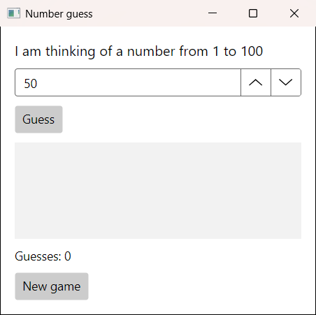
Number Guess
Number guess: the program thinks of a number from 1 to 100; every guess gets a hint and the guesses are counted
cd samples/UsingDotNet/tests/packages/AvaloniaSamples/apps/NumberGuess then ring NumberGuess.ringSource code
# Number guess: the program thinks of a number from 1 to 100; every guess gets a hint and the guesses are counted
load "../../avalonia.ring"
avUse()
nSecret = 0
nGuesses = 0
lWon = False
oWindow = avWindow("Number guess",360,330)
oPanel = avStack(10,16)
oWindow.Content = oPanel
oHint = avText("I am thinking of a number from 1 to 100")
oHint.TextWrapping = "Wrap"
oHint.FontSize = 16
oGuess = new NumericUpDown()
oGuess {
Minimum = 1
Maximum = 100
Value = 50
}
oHistory = new ListBox()
oHistory.Height = 110
oCount = avText("Guesses: 0")
oPanel {
Children.Add(oHint)
Children.Add(oGuess)
Children.Add(avButton("Guess","guess()"))
Children.Add(oHistory)
Children.Add(oCount)
Children.Add(avButton("New game","newGame()"))
}
newGame()
avRun(oWindow)
# --------------------------------------------------------------------------
func newGame
nSecret = random(99) + 1
nGuesses = 0
lWon = False
oHistory.Items.Clear()
oHint.Text = "I am thinking of a number from 1 to 100"
oCount.Text = "Guesses: 0"
func guess
if lWon
return
ok
nValue = floor(oGuess.Value)
nGuesses++
if nValue < nSecret
cHint = "too low"
but nValue > nSecret
cHint = "too high"
else
cHint = "correct!"
lWon = True
ok
oHistory.Items.Add("" + nValue + " is " + cHint)
oCount.Text = "Guesses: " + nGuesses
if lWon
oHint.Text = "You found " + nSecret + " in " + nGuesses + " guesses"
else
oHint.Text = "" + nValue + " is " + cHint
ok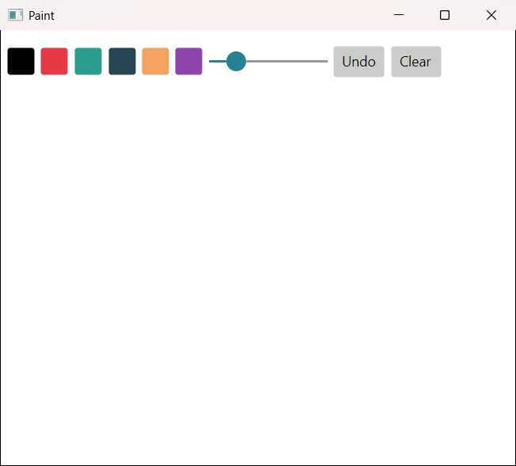
Paint
Paint: draw with the pointer on a canvas; a color, a brush size, undo and clear
cd samples/UsingDotNet/tests/packages/AvaloniaSamples/apps/Paint then ring Paint.ringSource code
# Paint: draw with the pointer on a canvas; a color, a brush size, undo and clear
load "../../avalonia.ring"
avUse()
aColors = ["#000000","#E63946","#2A9D8F","#264653","#F4A261","#8E44AD"]
cColor = "#000000"
nBrush = 6
aStrokes = [] # the shapes of each stroke
lDown = False
oLast = ""
oWindow = avWindow("Paint",520,440)
oDock = new DockPanel()
oWindow.Content = oDock
oBar = avRow(6)
oBar.Margin = avThickness(6)
oDock.SetDock(oBar,"Top")
for nColor = 1 to len(aColors)
oSwatch = avButton("","pick(" + nColor + ")")
oSwatch {
Width = 28
Height = 28
Background = avBrush(aColors[nColor])
}
oBar.Children.Add(oSwatch)
next
oSize = new Slider()
oSize {
Minimum = 1
Maximum = 30
Value = 6
Width = 120
setValueChangedEvent("sizeChanged()")
}
oBar {
Children.Add(oSize)
Children.Add(avButton("Undo","undo()"))
Children.Add(avButton("Clear","clear()"))
}
oCanvas = new Canvas()
oCanvas {
Background = avBrush("White")
setPointerPressedEvent("pressed(aDotNetArgs[2].GetPosition(oCanvas))")
setPointerMovedEvent("moved(aDotNetArgs[2].GetPosition(oCanvas))")
setPointerReleasedEvent("released()")
}
oDock.Children.Add(oBar)
oDock.Children.Add(oCanvas)
avRun(oWindow)
# --------------------------------------------------------------------------
func pick nColor
cColor = aColors[nColor]
func sizeChanged
nBrush = floor(oSize.Value)
# a dot of the brush at a position
func dot oPosition
oDot = new Ellipse()
oDot.Width = nBrush
oDot.Height = nBrush
oDot.Fill = avBrush(cColor)
oCanvas.SetLeft(oDot,oPosition.X - nBrush / 2)
oCanvas.SetTop(oDot,oPosition.Y - nBrush / 2)
oCanvas.Children.Add(oDot)
aStrokes[len(aStrokes)][2] += 1
func pressed oPosition
lDown = True
aStrokes + [cColor,0]
dot(oPosition)
func moved oPosition
if lDown
dot(oPosition)
ok
func released
lDown = False
# the last stroke is removed: its dots are the last children of the canvas
func undo
if len(aStrokes) = 0
return
ok
nDots = aStrokes[len(aStrokes)][2]
for nDot = 1 to nDots
oCanvas.Children.RemoveAt(oCanvas.Children.Count - 1)
next
del(aStrokes,len(aStrokes))
func clear
oCanvas.Children.Clear()
aStrokes = []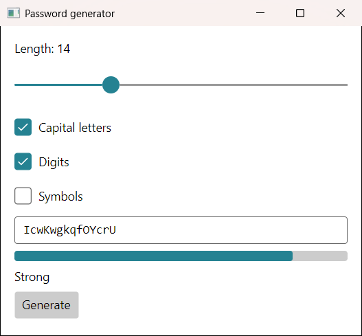
Password Generator
Password generator: the length and the kinds of characters; the strength is shown with a bar
cd samples/UsingDotNet/tests/packages/AvaloniaSamples/apps/PasswordGenerator then ring PasswordGenerator.ringSource code
# Password generator: the length and the kinds of characters; the strength is shown with a bar
load "../../avalonia.ring"
avUse()
cLower = "abcdefghijklmnopqrstuvwxyz"
cUpper = "ABCDEFGHIJKLMNOPQRSTUVWXYZ"
cDigits = "0123456789"
cSymbols = "!@#$%^&*()-_=+"
oWindow = avWindow("Password generator",420,360)
oPanel = avStack(8,16)
oWindow.Content = oPanel
oLength = new Slider()
oLength {
Minimum = 4
Maximum = 40
Value = 14
setValueChangedEvent("generate()")
}
oLengthText = avText("")
oUpperBox = option("Capital letters",True)
oDigitBox = option("Digits",True)
oSymbolBox = option("Symbols",False)
oPassword = new TextBox()
oPassword.IsReadOnly = True
oPassword.FontFamily = "Consolas, Courier New, monospace"
oStrength = new ProgressBar()
oStrength {
Minimum = 0
Maximum = 100
Height = 12
}
oStrengthText = avText("")
oPanel {
Children.Add(oLengthText)
Children.Add(oLength)
Children.Add(oUpperBox)
Children.Add(oDigitBox)
Children.Add(oSymbolBox)
Children.Add(oPassword)
Children.Add(oStrength)
Children.Add(oStrengthText)
Children.Add(avButton("Generate","generate()"))
}
generate()
avRun(oWindow)
# --------------------------------------------------------------------------
func option cText, lChecked
oBox = new CheckBox()
oBox {
Content = cText
IsChecked = lChecked
setIsCheckedChangedEvent("generate()")
}
return oBox
# the characters that a password can have with the options that are checked
func alphabet
cChars = cLower
if oUpperBox.IsChecked
cChars += cUpper
ok
if oDigitBox.IsChecked
cChars += cDigits
ok
if oSymbolBox.IsChecked
cChars += cSymbols
ok
return cChars
# a password of a length from an alphabet
func makePassword nLength, cChars
cText = ""
for nChar = 1 to nLength
cText += cChars[random(len(cChars) - 1) + 1]
next
return cText
# the strength in bits: the length times the bits of one character
func strength nLength, cChars
return nLength * log(len(cChars)) / log(2)
func generate
if not isobject(oStrengthText)
return
ok
nLength = floor(oLength.Value)
cChars = alphabet()
oLengthText.Text = "Length: " + nLength
oPassword.Text = makePassword(nLength,cChars)
nBits = strength(nLength,cChars)
oStrength.Value = min(100,nBits)
if nBits < 40
oStrengthText.Text = "Weak"
but nBits < 70
oStrengthText.Text = "Fair"
else
oStrengthText.Text = "Strong"
ok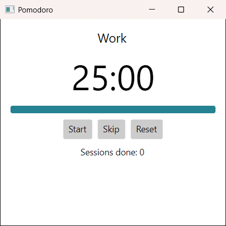
Pomodoro
Pomodoro: work sessions and breaks; the timer counts the seconds, a ring (a ProgressBar) shows the time that is left and the sessions are counted
cd samples/UsingDotNet/tests/packages/AvaloniaSamples/apps/Pomodoro then ring Pomodoro.ringSource code
# Pomodoro: work sessions and breaks; the timer counts the seconds, a ring (a ProgressBar) shows the time that is left and the sessions are counted
load "../../avalonia.ring"
avUse()
nWork = 25 * 60
nShort = 5 * 60
nLong = 15 * 60
cMode = "Work"
nLeft = nWork
nSessions = 0
oWindow = avWindow("Pomodoro",360,330)
oPanel = avStack(10,16)
oWindow.Content = oPanel
oMode = avText("")
oMode.FontSize = 20
oMode.HorizontalAlignment = "Center"
oTime = avText("")
oTime.FontSize = 56
oTime.HorizontalAlignment = "Center"
oBar = new ProgressBar()
oBar {
Minimum = 0
Maximum = 100
Height = 12
}
oCount = avText("")
oCount.HorizontalAlignment = "Center"
oStart = avButton("Start","startPause()")
oRow = avRow(8)
oRow.HorizontalAlignment = "Center"
oRow {
Children.Add(oStart)
Children.Add(avButton("Skip","skip()"))
Children.Add(avButton("Reset","reset()"))
}
oPanel {
Children.Add(oMode)
Children.Add(oTime)
Children.Add(oBar)
Children.Add(oRow)
Children.Add(oCount)
}
oTimer = new DispatcherTimer()
oTimer.Interval = dnStatic("System.TimeSpan","FromSeconds",[1])
oTimer.setTickEvent("tick()")
show()
avRun(oWindow)
# --------------------------------------------------------------------------
func two nNumber
if nNumber < 10
return "0" + nNumber
ok
return "" + nNumber
func lengthOf cWhat
switch cWhat
on "Work"
return nWork
on "Short break"
return nShort
off
return nLong
func show
nTotal = lengthOf(cMode)
oMode.Text = cMode
oTime.Text = two(floor(nLeft / 60)) + ":" + two(nLeft % 60)
oBar.Value = nLeft * 100 / nTotal
oCount.Text = "Sessions done: " + nSessions
# what comes after a mode: after work a short break (a long one after four sessions), after a break work
func nextMode
if cMode = "Work"
nSessions++
if nSessions % 4 = 0
cMode = "Long break"
else
cMode = "Short break"
ok
else
cMode = "Work"
ok
nLeft = lengthOf(cMode)
func tick
nLeft--
if nLeft <= 0
nextMode()
ok
show()
func startPause
if oTimer.IsEnabled
oTimer.Stop()
oStart.Content = "Resume"
else
oTimer.Start()
oStart.Content = "Pause"
ok
func skip
nextMode()
show()
func reset
oTimer.Stop()
cMode = "Work"
nLeft = nWork
nSessions = 0
oStart.Content = "Start"
show()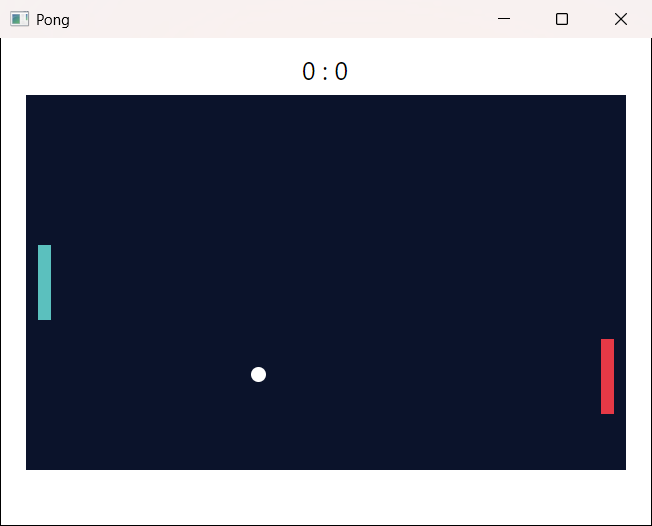
Pong
Pong: you play the left paddle with W and S (or Q and A), the computer plays the right one; the ball speeds up; first to five wins
cd samples/UsingDotNet/tests/packages/AvaloniaSamples/apps/Pong then ring Pong.ringSource code
# Pong: you play the left paddle with W and S (or Q and A), the computer plays the right one; the ball speeds up; first to five wins
load "../../avalonia.ring"
avUse()
nWidth = 480
nHeight = 300
nPaddle = 60
nPlayerY = 120
nComputerY = 120
nBallX = 240
nBallY = 150
nSpeedX = 4
nSpeedY = 2
nPlayerScore = 0
nComputerScore = 0
lOver = False
oWindow = avWindow("Pong",nWidth + 40,nHeight + 90)
oPanel = avStack(6,12)
oWindow.Content = oPanel
oScore = avText("")
oScore.FontSize = 20
oScore.HorizontalAlignment = "Center"
oCanvas = new Canvas()
oCanvas {
Width = nWidth
Height = nHeight
Background = avBrush("#0B132B")
}
oPlayer = shape(10,nPaddle,"#5BC0BE")
oComputer = shape(10,nPaddle,"#E63946")
oBall = new Ellipse()
oBall.Width = 12
oBall.Height = 12
oBall.Fill = avBrush("White")
oCanvas {
Children.Add(oPlayer)
Children.Add(oComputer)
Children.Add(oBall)
}
oPanel {
Children.Add(oScore)
Children.Add(oCanvas)
}
oWindow.setKeyDownEvent("keyDown(aDotNetArgs[2].Key)")
oTimer = new DispatcherTimer()
oTimer.Interval = dnStatic("System.TimeSpan","FromMilliseconds",[20])
oTimer.setTickEvent("tick()")
draw()
oTimer.Start()
avRun(oWindow)
# --------------------------------------------------------------------------
func shape nShapeWidth, nShapeHeight, cColor
oShape = new Rectangle()
oShape.Width = nShapeWidth
oShape.Height = nShapeHeight
oShape.Fill = avBrush(cColor)
return oShape
func keyDown cKey
cKey = "" + cKey
if cKey = "W" or cKey = "Q"
nPlayerY = max(0,nPlayerY - 24)
but cKey = "S" or cKey = "A"
nPlayerY = min(nHeight - nPaddle,nPlayerY + 24)
but cKey = "Space" and lOver
nPlayerScore = 0
nComputerScore = 0
lOver = False
serve(1)
ok
# the ball goes to the center and toward a player (1 the computer, -1 the player)
func serve nDirection
nBallX = nWidth / 2
nBallY = nHeight / 2
nSpeedX = 4 * nDirection
nSpeedY = random(4) - 2
# the computer follows the ball, a little slower than the ball
func moveComputer
nCenter = nComputerY + nPaddle / 2
if nBallY < nCenter - 6
nComputerY = max(0,nComputerY - 3)
but nBallY > nCenter + 6
nComputerY = min(nHeight - nPaddle,nComputerY + 3)
ok
# one step of the game
func tick
if lOver
return
ok
moveComputer()
nBallX += nSpeedX
nBallY += nSpeedY
if nBallY <= 0 or nBallY >= nHeight - 12
nSpeedY = -nSpeedY
ok
# the left paddle is at x 10 to 20, the right one at x nWidth - 20 to nWidth - 10
if nSpeedX < 0 and nBallX <= 20 and nBallX >= 8 and nBallY + 12 >= nPlayerY and nBallY <= nPlayerY + nPaddle
nSpeedX = -nSpeedX * 1.1
nSpeedY = (nBallY + 6 - (nPlayerY + nPaddle / 2)) / 8
but nSpeedX > 0 and nBallX + 12 >= nWidth - 20 and nBallX <= nWidth - 8 and nBallY + 12 >= nComputerY and nBallY <= nComputerY + nPaddle
nSpeedX = -nSpeedX * 1.1
nSpeedY = (nBallY + 6 - (nComputerY + nPaddle / 2)) / 8
ok
if nBallX < -12
nComputerScore++
serve(-1)
but nBallX > nWidth
nPlayerScore++
serve(1)
ok
if nPlayerScore >= 5 or nComputerScore >= 5
lOver = True
ok
draw()
func draw
oCanvas.SetLeft(oPlayer,10)
oCanvas.SetTop(oPlayer,nPlayerY)
oCanvas.SetLeft(oComputer,nWidth - 20)
oCanvas.SetTop(oComputer,nComputerY)
oCanvas.SetLeft(oBall,nBallX)
oCanvas.SetTop(oBall,nBallY)
if lOver
if nPlayerScore >= 5
oScore.Text = "You win! " + nPlayerScore + " : " + nComputerScore + " (press Space)"
else
oScore.Text = "The computer wins " + nComputerScore + " : " + nPlayerScore + " (press Space)"
ok
else
oScore.Text = "" + nPlayerScore + " : " + nComputerScore
ok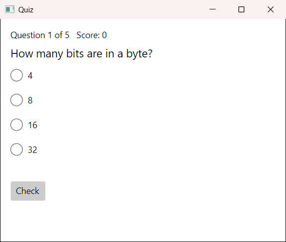
Quiz App
A quiz: a question with four answers (radio buttons), the score, and a result at the end
cd samples/UsingDotNet/tests/packages/AvaloniaSamples/apps/QuizApp then ring QuizApp.ringSource code
# A quiz: a question with four answers (radio buttons), the score, and a result at the end
load "../../avalonia.ring"
avUse()
# [question, [answers], index of the right answer]
aQuestions = [
["How many bits are in a byte?",["4","8","16","32"],2],
["Which planet is closest to the Sun?",["Venus","Earth","Mercury","Mars"],3],
["What is the capital of Egypt?",["Cairo","Alexandria","Giza","Luxor"],1],
["What is 7 times 8?",["54","56","58","64"],2],
["Which language is this program written in?",["Python","Ring","Lua","Java"],2]
]
nQuestion = 1
nScore = 0
lAnswered = False
oWindow = avWindow("Quiz",460,360)
oPanel = avStack(8,16)
oWindow.Content = oPanel
oProgress = avText("")
oQuestion = avText("")
oQuestion.FontSize = 18
oQuestion.TextWrapping = "Wrap"
aAnswers = []
for nAnswer = 1 to 4
oRadio = new RadioButton()
oRadio.GroupName = "answers"
aAnswers + oRadio
next
oFeedback = avText("")
oNext = avButton("Check","check()")
oPanel {
Children.Add(oProgress)
Children.Add(oQuestion)
}
for oRadio in aAnswers
oPanel.Children.Add(oRadio)
next
oPanel {
Children.Add(oFeedback)
Children.Add(oNext)
}
showQuestion()
avRun(oWindow)
# --------------------------------------------------------------------------
func showQuestion
aQuestion = aQuestions[nQuestion]
oProgress.Text = "Question " + nQuestion + " of " + len(aQuestions) + " Score: " + nScore
oQuestion.Text = aQuestion[1]
for nAnswer = 1 to 4
aAnswers[nAnswer].Content = aQuestion[2][nAnswer]
aAnswers[nAnswer].IsChecked = False
aAnswers[nAnswer].IsEnabled = True
next
oFeedback.Text = ""
oNext.Content = "Check"
lAnswered = False
# the number of the answer that is checked (0 when none is)
func chosen
for nAnswer = 1 to 4
if aAnswers[nAnswer].IsChecked
return nAnswer
ok
next
return 0
func check
if nQuestion > len(aQuestions)
restart()
return
ok
if lAnswered
nQuestion++
if nQuestion > len(aQuestions)
finish()
else
showQuestion()
ok
return
ok
nChosen = chosen()
if nChosen = 0
oFeedback.Text = "Choose an answer"
return
ok
lAnswered = True
if nChosen = aQuestions[nQuestion][3]
nScore++
oFeedback.Text = "Correct!"
else
oFeedback.Text = "Wrong: the answer is " + aQuestions[nQuestion][2][aQuestions[nQuestion][3]]
ok
for oRadio in aAnswers
oRadio.IsEnabled = False
next
oProgress.Text = "Question " + nQuestion + " of " + len(aQuestions) + " Score: " + nScore
oNext.Content = "Next"
func finish
oProgress.Text = "Finished"
oQuestion.Text = "You scored " + nScore + " out of " + len(aQuestions)
for oRadio in aAnswers
oRadio.IsVisible = False
next
oFeedback.Text = ""
oNext.Content = "Play again"
func restart
nQuestion = 1
nScore = 0
for oRadio in aAnswers
oRadio.IsVisible = True
next
showQuestion()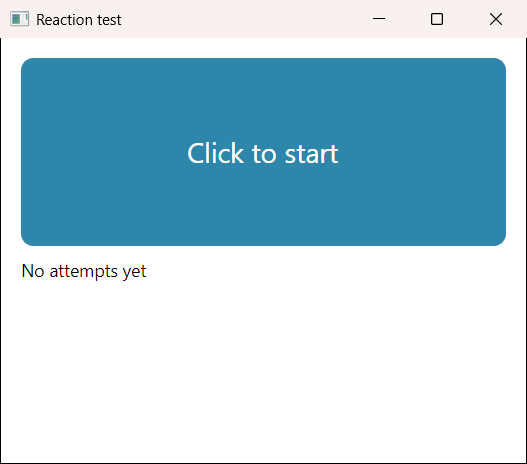
Reaction Test
Reaction test: wait for the red box to turn green and click as fast as you can; clicking too early is a false start; the best time is kept
cd samples/UsingDotNet/tests/packages/AvaloniaSamples/apps/ReactionTest then ring ReactionTest.ringSource code
# Reaction test: wait for the red box to turn green and click as fast as you can; clicking too early is a false start; the best time is kept
load "../../avalonia.ring"
avUse()
dnImport("System.Diagnostics")
cState = "idle" # idle, waiting, ready, early, result
oWatch = new Stopwatch()
nLast = 0
nBest = 0
nAttempts = 0
oWindow = avWindow("Reaction test",420,340)
oPanel = avStack(10,16)
oWindow.Content = oPanel
oBox = new Border()
oBox {
Height = 150
CornerRadius = (new CornerRadius).Parse("10")
Background = avBrush("#2E86AB")
}
oMessage = avText("Click to start")
oMessage.FontSize = 22
oMessage.Foreground = avBrush("White")
oMessage.HorizontalAlignment = "Center"
oMessage.VerticalAlignment = "Center"
oBox.Child = oMessage
oBox.setPointerPressedEvent("boxClicked()")
oStats = avText("")
oWait = new DispatcherTimer()
oWait.setTickEvent("turnGreen()")
oPanel {
Children.Add(oBox)
Children.Add(oStats)
}
showStats()
avRun(oWindow)
# --------------------------------------------------------------------------
func showStats
if nAttempts = 0
oStats.Text = "No attempts yet"
else
oStats.Text = "Last: " + nLast + " ms Best: " + nBest + " ms Attempts: " + nAttempts
ok
# a click on the box
func boxClicked
press()
func press
switch cState
on "idle"
startWaiting()
on "result"
startWaiting()
on "early"
startWaiting()
on "waiting"
oWait.Stop()
cState = "early"
oBox.Background = avBrush("#E9C46A")
oMessage.Text = "Too early! Click to try again"
on "ready"
oWatch.Stop()
nLast = oWatch.ElapsedMilliseconds
nAttempts++
if nBest = 0 or nLast < nBest
nBest = nLast
ok
cState = "result"
oBox.Background = avBrush("#2E86AB")
oMessage.Text = "" + nLast + " ms! Click to try again"
showStats()
off
# the box is red; it turns green after a random time of one to three seconds
func startWaiting
cState = "waiting"
oBox.Background = avBrush("#C73E1D")
oMessage.Text = "Wait for green..."
oWait.Interval = dnStatic("System.TimeSpan","FromMilliseconds",[1000 + random(2000)])
oWait.Start()
func turnGreen
oWait.Stop()
cState = "ready"
oBox.Background = avBrush("#2A9D8F")
oMessage.Text = "Click now!"
oWatch.Reset()
oWatch.Start()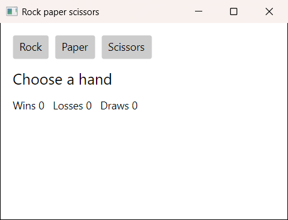
Rock Paper Scissors
Rock, paper, scissors against the computer: three buttons, the choice of the computer, the result and the score
cd samples/UsingDotNet/tests/packages/AvaloniaSamples/apps/RockPaperScissors then ring RockPaperScissors.ringSource code
# Rock, paper, scissors against the computer: three buttons, the choice of the computer, the result and the score
load "../../avalonia.ring"
avUse()
aNames = ["Rock","Paper","Scissors"]
nWins = 0
nLosses = 0
nDraws = 0
oWindow = avWindow("Rock paper scissors",380,260)
oPanel = avStack(12,16)
oWindow.Content = oPanel
oBar = avRow(8)
for nChoice = 1 to 3
oBar.Children.Add(avButton(aNames[nChoice],"choose(" + nChoice + ")"))
next
oResult = avText("Choose a hand")
oResult.FontSize = 20
oScore = avText("")
oPanel {
Children.Add(oBar)
Children.Add(oResult)
Children.Add(oScore)
}
showScore()
avRun(oWindow)
# --------------------------------------------------------------------------
# 1 beats 3, 2 beats 1, 3 beats 2: the result for the player (1 win, 0 draw, -1 loss)
func outcome nPlayer, nComputer
if nPlayer = nComputer
return 0
ok
if (nPlayer = 1 and nComputer = 3) or (nPlayer = 2 and nComputer = 1) or (nPlayer = 3 and nComputer = 2)
return 1
ok
return -1
# the player chose a hand, the computer chooses one at random
func choose nPlayer
chooseAgainst(nPlayer,random(2) + 1)
func chooseAgainst nPlayer, nComputer
nResult = outcome(nPlayer,nComputer)
switch nResult
on 1
nWins++
cText = "You win"
on -1
nLosses++
cText = "You lose"
other
nDraws++
cText = "A draw"
off
oResult.Text = aNames[nPlayer] + " against " + aNames[nComputer] + ": " + cText
showScore()
func showScore
oScore.Text = "Wins " + nWins + " Losses " + nLosses + " Draws " + nDraws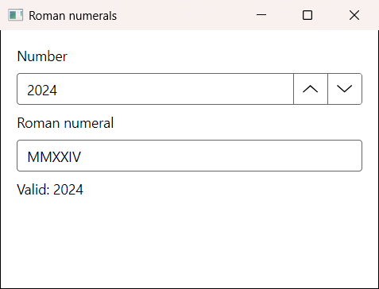
Roman Numerals
Roman numerals: a number from 1 to 3999 becomes a Roman numeral and a Roman numeral becomes a number, as you type
cd samples/UsingDotNet/tests/packages/AvaloniaSamples/apps/RomanNumerals then ring RomanNumerals.ringSource code
# Roman numerals: a number from 1 to 3999 becomes a Roman numeral and a Roman numeral becomes a number, as you type
load "../../avalonia.ring"
avUse()
aValues = [1000,900,500,400,100,90,50,40,10,9,5,4,1]
aSymbols = ["M","CM","D","CD","C","XC","L","XL","X","IX","V","IV","I"]
lBusy = False
oWindow = avWindow("Roman numerals",380,260)
oPanel = avStack(8,16)
oWindow.Content = oPanel
oNumber = new NumericUpDown()
oNumber {
Minimum = 1
Maximum = 3999
Value = 2024
setValueChangedEvent("numberChanged()")
}
oRoman = new TextBox()
oRoman.setTextChangedEvent("romanChanged()")
oState = avText("")
oPanel {
Children.Add(avText("Number"))
Children.Add(oNumber)
Children.Add(avText("Roman numeral"))
Children.Add(oRoman)
Children.Add(oState)
}
numberChanged()
avRun(oWindow)
# --------------------------------------------------------------------------
func toRoman nNumber
cText = ""
for nPart = 1 to 13
while nNumber >= aValues[nPart]
cText += aSymbols[nPart]
nNumber -= aValues[nPart]
end
next
return cText
# the number of a Roman numeral, 0 when it is not a valid one (a numeral is valid when it is the numeral of its own number)
func fromRoman cText
cText = upper(cText)
nTotal = 0
nPosition = 1
nSize = len(cText)
for nPart = 1 to 13
while nPosition + len(aSymbols[nPart]) - 1 <= nSize and substr(cText,nPosition,len(aSymbols[nPart])) = aSymbols[nPart]
nTotal += aValues[nPart]
nPosition += len(aSymbols[nPart])
end
next
if nPosition <= nSize or nTotal = 0 or toRoman(nTotal) != cText
return 0
ok
return nTotal
func numberChanged
if lBusy or not isobject(oState)
return
ok
lBusy = True
oRoman.Text = toRoman(floor(oNumber.Value))
oState.Text = "Valid"
lBusy = False
func romanChanged
if lBusy
return
ok
cText = oRoman.Text
if not isstring(cText)
return
ok
nValue = fromRoman(cText)
if nValue > 0
lBusy = True
oNumber.Value = nValue
lBusy = False
oState.Text = "Valid: " + nValue
else
oState.Text = "Not a Roman numeral"
ok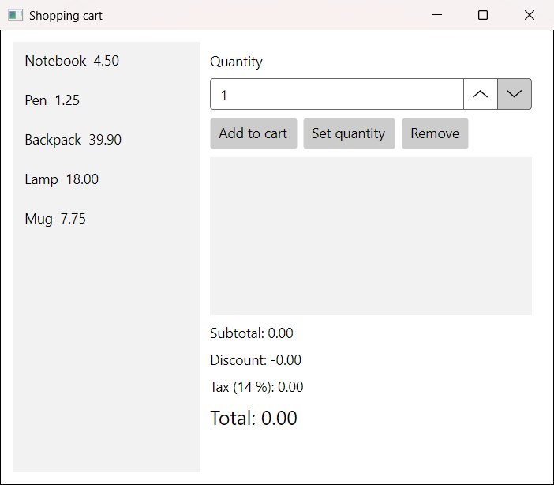
Shopping Cart
A shopping cart: products with prices; add them to the cart, change the quantity, remove them; the subtotal, a discount and the tax give the total
cd samples/UsingDotNet/tests/packages/AvaloniaSamples/apps/ShoppingCart then ring ShoppingCart.ringSource code
# A shopping cart: products with prices; add them to the cart, change the quantity, remove them; the subtotal, a discount and the tax give the total
load "../../avalonia.ring"
avUse()
aProducts = [["Notebook",4.5],["Pen",1.25],["Backpack",39.9],["Lamp",18],["Mug",7.75]]
aCart = [] # [product number, quantity]
nTaxPercent = 14
oWindow = avWindow("Shopping cart",560,460)
oDock = new DockPanel()
oDock.Margin = avThickness(12)
oWindow.Content = oDock
oProducts = new ListBox()
oProducts.Width = 190
for aProduct in aProducts
oProducts.Items.Add(aProduct[1] + " " + money(aProduct[2]))
next
oDock.SetDock(oProducts,"Left")
oRight = avStack(8,10)
oCartList = new ListBox()
oCartList.Height = 160
oQuantity = new NumericUpDown()
oQuantity {
Minimum = 1
Maximum = 99
Value = 1
}
oButtons = avRow(6)
oButtons {
Children.Add(avButton("Add to cart","addToCart()"))
Children.Add(avButton("Set quantity","setQuantity()"))
Children.Add(avButton("Remove","removeFromCart()"))
}
oSubtotal = avText("")
oDiscount = avText("")
oTax = avText("")
oTotal = avText("")
oTotal.FontSize = 20
oRight {
Children.Add(avText("Quantity"))
Children.Add(oQuantity)
Children.Add(oButtons)
Children.Add(oCartList)
Children.Add(oSubtotal)
Children.Add(oDiscount)
Children.Add(oTax)
Children.Add(oTotal)
}
oDock {
Children.Add(oProducts)
Children.Add(oRight)
}
showCart()
avRun(oWindow)
# --------------------------------------------------------------------------
func money nValue
nCents = floor(nValue * 100 + 0.5)
nRest = nCents % 100
cRest = "" + nRest
if nRest < 10
cRest = "0" + nRest
ok
return "" + floor(nCents / 100) + "." + cRest
func cartIndexOf nProduct
for nLine = 1 to len(aCart)
if aCart[nLine][1] = nProduct
return nLine
ok
next
return 0
func addToCart
nProduct = oProducts.SelectedIndex + 1
if nProduct < 1
return
ok
nLine = cartIndexOf(nProduct)
if nLine > 0
aCart[nLine][2] += floor(oQuantity.Value)
else
aCart + [nProduct,floor(oQuantity.Value)]
ok
showCart()
func setQuantity
nLine = oCartList.SelectedIndex + 1
if nLine >= 1 and nLine <= len(aCart)
aCart[nLine][2] = floor(oQuantity.Value)
showCart()
ok
func removeFromCart
nLine = oCartList.SelectedIndex + 1
if nLine >= 1 and nLine <= len(aCart)
del(aCart,nLine)
showCart()
ok
func subtotal
nSum = 0
for aLine in aCart
nSum += aProducts[aLine[1]][2] * aLine[2]
next
return nSum
# 10 percent off for a subtotal of 50 or more
func discountOf nSubtotal
if nSubtotal >= 50
return nSubtotal / 10
ok
return 0
func showCart
oCartList.Items.Clear()
for aLine in aCart
oCartList.Items.Add("" + aLine[2] + " x " + aProducts[aLine[1]][1] + " " + money(aProducts[aLine[1]][2] * aLine[2]))
next
nSubtotal = subtotal()
nDiscount = discountOf(nSubtotal)
nTax = (nSubtotal - nDiscount) * nTaxPercent / 100
oSubtotal.Text = "Subtotal: " + money(nSubtotal)
oDiscount.Text = "Discount: -" + money(nDiscount)
oTax.Text = "Tax (" + nTaxPercent + " %): " + money(nTax)
oTotal.Text = "Total: " + money(nSubtotal - nDiscount + nTax)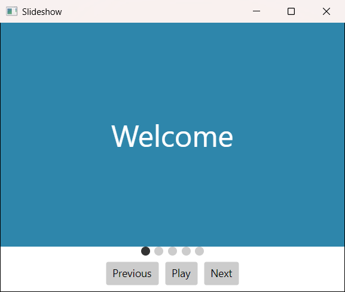
Slideshow
Slideshow: colored slides with titles in a carousel; Play changes the slide with a timer; the dots show where you are
cd samples/UsingDotNet/tests/packages/AvaloniaSamples/apps/Slideshow then ring Slideshow.ringSource code
# Slideshow: colored slides with titles in a carousel; Play changes the slide with a timer; the dots show where you are
load "../../avalonia.ring"
avUse()
aSlides = [["Welcome","#2E86AB"],["Objects","#F18F01"],["Windows","#2A9D8F"],["Events","#8E44AD"],["Thank you","#C73E1D"]]
nSlide = 1
oWindow = avWindow("Slideshow",460,360)
oDock = new DockPanel()
oWindow.Content = oDock
oBar = avRow(8)
oBar.HorizontalAlignment = "Center"
oBar.Margin = avThickness(8)
oPlay = avButton("Play","togglePlay()")
oBar {
Children.Add(avButton("Previous","previousSlide()"))
Children.Add(oPlay)
Children.Add(avButton("Next","nextSlide()"))
}
oDock.SetDock(oBar,"Bottom")
oDots = avRow(6)
oDots.HorizontalAlignment = "Center"
oDock.SetDock(oDots,"Bottom")
aDots = []
for nDot = 1 to len(aSlides)
oDot = new Ellipse()
oDot.Width = 12
oDot.Height = 12
oDots.Children.Add(oDot)
aDots + oDot
next
oSlideView = new Border()
oTitle = avText("")
oTitle.FontSize = 40
oTitle.Foreground = avBrush("White")
oTitle.HorizontalAlignment = "Center"
oTitle.VerticalAlignment = "Center"
oSlideView.Child = oTitle
oDock {
Children.Add(oBar)
Children.Add(oDots)
Children.Add(oSlideView)
}
oTimer = new DispatcherTimer()
oTimer.Interval = dnStatic("System.TimeSpan","FromSeconds",[2])
oTimer.setTickEvent("nextSlide()")
showSlide()
avRun(oWindow)
# --------------------------------------------------------------------------
func showSlide
oTitle.Text = aSlides[nSlide][1]
oSlideView.Background = avBrush(aSlides[nSlide][2])
for nDot = 1 to len(aDots)
if nDot = nSlide
aDots[nDot].Fill = avBrush("#333333")
else
aDots[nDot].Fill = avBrush("#CCCCCC")
ok
next
func nextSlide
nSlide++
if nSlide > len(aSlides)
nSlide = 1
ok
showSlide()
func previousSlide
nSlide--
if nSlide < 1
nSlide = len(aSlides)
ok
showSlide()
func togglePlay
if oTimer.IsEnabled
oTimer.Stop()
oPlay.Content = "Play"
else
oTimer.Start()
oPlay.Content = "Pause"
ok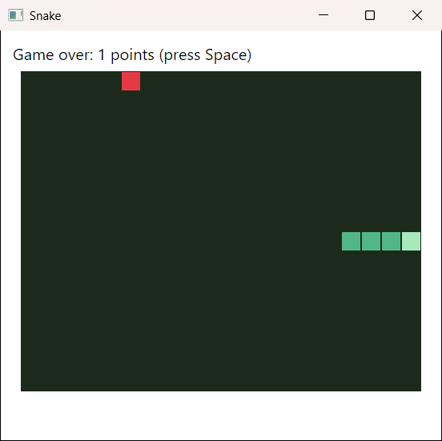
Snake
Snake: the arrow keys (or W A S D) steer the snake, it grows when it eats the food and the game ends when it hits a wall or itself
cd samples/UsingDotNet/tests/packages/AvaloniaSamples/apps/Snake then ring Snake.ringSource code
# Snake: the arrow keys (or W A S D) steer the snake, it grows when it eats the food and the game ends when it hits a wall or itself
load "../../avalonia.ring"
avUse()
nColumns = 20
nRows = 16
nCell = 20
aSnake = [] # [column, row] of each part, the head first
aDirection = [1,0]
aNextDirection = [1,0]
aFood = [0,0]
nScore = 0
lOver = False
oWindow = avWindow("Snake",nColumns * nCell + 40,nRows * nCell + 90)
oPanel = avStack(6,12)
oWindow.Content = oPanel
oCanvas = new Canvas()
oCanvas {
Width = nColumns * nCell
Height = nRows * nCell
Background = avBrush("#1B2A1B")
}
oScore = avText("")
oScore.FontSize = 16
oPanel {
Children.Add(oScore)
Children.Add(oCanvas)
}
oWindow.setKeyDownEvent("keyDown(aDotNetArgs[2].Key)")
oTimer = new DispatcherTimer()
oTimer.Interval = dnStatic("System.TimeSpan","FromMilliseconds",[140])
oTimer.setTickEvent("move()")
newGame()
oTimer.Start()
avRun(oWindow)
# --------------------------------------------------------------------------
func newGame
aSnake = [[10,8],[9,8],[8,8]]
aDirection = [1,0]
aNextDirection = [1,0]
nScore = 0
lOver = False
placeFood()
draw()
# the food goes to a cell that the snake does not cover
func placeFood
while True
aFood = [random(nColumns - 1),random(nRows - 1)]
if not onSnake(aFood[1],aFood[2])
exit
ok
end
func onSnake nColumn, nRow
for aPart in aSnake
if aPart[1] = nColumn and aPart[2] = nRow
return True
ok
next
return False
# the arrow keys; the snake cannot turn back on itself
func keyDown cKey
switch cKey
on "Left"
turn(-1,0)
on "A"
turn(-1,0)
on "Right"
turn(1,0)
on "D"
turn(1,0)
on "Up"
turn(0,-1)
on "W"
turn(0,-1)
on "Down"
turn(0,1)
on "S"
turn(0,1)
on "Space"
if lOver
newGame()
ok
off
func turn nX, nY
if aDirection[1] + nX != 0 or aDirection[2] + nY != 0
aNextDirection = [nX,nY]
ok
# one step of the snake
func move
if lOver
return
ok
aDirection = aNextDirection
nColumn = aSnake[1][1] + aDirection[1]
nRow = aSnake[1][2] + aDirection[2]
if nColumn < 0 or nColumn >= nColumns or nRow < 0 or nRow >= nRows or onSnake(nColumn,nRow)
lOver = True
draw()
return
ok
insert(aSnake,0,[nColumn,nRow])
if nColumn = aFood[1] and nRow = aFood[2]
nScore++
placeFood()
else
del(aSnake,len(aSnake))
ok
draw()
func square nColumn, nRow, cColor
oSquare = new Rectangle()
oSquare.Width = nCell - 2
oSquare.Height = nCell - 2
oSquare.Fill = avBrush(cColor)
oCanvas.SetLeft(oSquare,nColumn * nCell + 1)
oCanvas.SetTop(oSquare,nRow * nCell + 1)
oCanvas.Children.Add(oSquare)
func draw
oCanvas.Children.Clear()
square(aFood[1],aFood[2],"#E63946")
nPart = 0
for aPart in aSnake
nPart++
if nPart = 1
square(aPart[1],aPart[2],"#A7E8BD")
else
square(aPart[1],aPart[2],"#52B788")
ok
next
if lOver
oScore.Text = "Game over: " + nScore + " points (press Space)"
else
oScore.Text = "Score: " + nScore
ok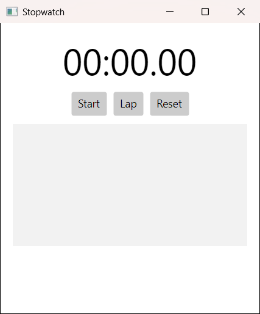
Stopwatch
Stopwatch: start, stop, lap and reset; the time is read from a .NET Stopwatch and shown every 50 milliseconds
cd samples/UsingDotNet/tests/packages/AvaloniaSamples/apps/Stopwatch then ring Stopwatch.ringSource code
# Stopwatch: start, stop, lap and reset; the time is read from a .NET Stopwatch and shown every 50 milliseconds
load "../../avalonia.ring"
avUse()
dnImport("System.Diagnostics")
oWatch = new Stopwatch()
aLaps = []
nLastLap = 0
oWindow = avWindow("Stopwatch",340,380)
oPanel = avStack(10,16)
oWindow.Content = oPanel
oTime = avText("00:00.00")
oTime.FontSize = 48
oTime.HorizontalAlignment = "Center"
oStart = avButton("Start","startStop()")
oLap = avButton("Lap","lap()")
oReset = avButton("Reset","reset()")
oBar = avRow(8)
oBar.HorizontalAlignment = "Center"
oBar {
Children.Add(oStart)
Children.Add(oLap)
Children.Add(oReset)
}
oLaps = new ListBox()
oLaps.Height = 160
oPanel {
Children.Add(oTime)
Children.Add(oBar)
Children.Add(oLaps)
}
oTimer = new DispatcherTimer()
oTimer.Interval = dnStatic("System.TimeSpan","FromMilliseconds",[50])
oTimer.setTickEvent("refresh()")
oTimer.Start()
avRun(oWindow)
# --------------------------------------------------------------------------
# milliseconds as minutes:seconds.hundredths
func formatTime nMilliseconds
nMinutes = floor(nMilliseconds / 60000)
nSeconds = floor((nMilliseconds % 60000) / 1000)
nHundredths = floor((nMilliseconds % 1000) / 10)
return two(nMinutes) + ":" + two(nSeconds) + "." + two(nHundredths)
func two nNumber
if nNumber < 10
return "0" + nNumber
ok
return "" + nNumber
func refresh
oTime.Text = formatTime(oWatch.ElapsedMilliseconds)
func startStop
if oWatch.IsRunning
oWatch.Stop()
oStart.Content = "Start"
else
oWatch.Start()
oStart.Content = "Stop"
ok
func lap
nNow = oWatch.ElapsedMilliseconds
aLaps + nNow
oLaps.Items.Add("Lap " + len(aLaps) + " " + formatTime(nNow) + " (+" + formatTime(nNow - nLastLap) + ")")
nLastLap = nNow
func reset
oWatch.Reset()
oStart.Content = "Start"
aLaps = []
nLastLap = 0
oLaps.Items.Clear()
refresh()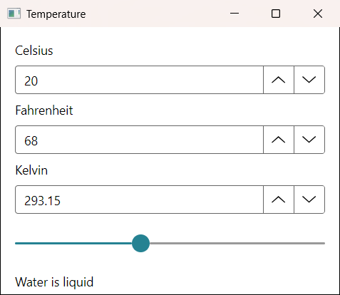
Temperature Converter
Temperature converter: a value in one scale is shown in the other two (Celsius, Fahrenheit, Kelvin); a slider moves the Celsius value
cd samples/UsingDotNet/tests/packages/AvaloniaSamples/apps/TemperatureConverter then ring TemperatureConverter.ringSource code
# Temperature converter: a value in one scale is shown in the other two (Celsius, Fahrenheit, Kelvin); a slider moves the Celsius value
load "../../avalonia.ring"
avUse()
lBusy = False
oWindow = avWindow("Temperature",380,300)
oPanel = avStack(8,16)
oWindow.Content = oPanel
oCelsius = box("Celsius","celsiusChanged()")
oFahrenheit = box("Fahrenheit","fahrenheitChanged()")
oKelvin = box("Kelvin","kelvinChanged()")
oSlider = new Slider()
oSlider {
Minimum = -100
Maximum = 200
Value = 20
setValueChangedEvent("sliderMoved()")
}
oState = avText("")
oPanel {
Children.Add(avText("Celsius"))
Children.Add(oCelsius)
Children.Add(avText("Fahrenheit"))
Children.Add(oFahrenheit)
Children.Add(avText("Kelvin"))
Children.Add(oKelvin)
Children.Add(oSlider)
Children.Add(oState)
}
setCelsius(20)
avRun(oWindow)
# --------------------------------------------------------------------------
func box cName, cCode
oBox = new NumericUpDown()
oBox {
Minimum = -1000
Maximum = 10000
Increment = 1
FormatString = "0.##"
setValueChangedEvent(cCode)
}
return oBox
func toFahrenheit nCelsius
return nCelsius * 9 / 5 + 32
func toCelsius nFahrenheit
return (nFahrenheit - 32) * 5 / 9
# all the scales follow a Celsius value (nothing runs again while they are set)
func setCelsius nCelsius
if lBusy
return
ok
lBusy = True
oCelsius.Value = nCelsius
oFahrenheit.Value = toFahrenheit(nCelsius)
oKelvin.Value = nCelsius + 273.15
oSlider.Value = nCelsius
if nCelsius <= 0
oState.Text = "Water freezes"
but nCelsius >= 100
oState.Text = "Water boils"
else
oState.Text = "Water is liquid"
ok
lBusy = False
func celsiusChanged
setCelsius(oCelsius.Value)
func fahrenheitChanged
if not lBusy
setCelsius(toCelsius(oFahrenheit.Value))
ok
func kelvinChanged
if not lBusy
setCelsius(oKelvin.Value - 273.15)
ok
func sliderMoved
if not lBusy
setCelsius(oSlider.Value)
ok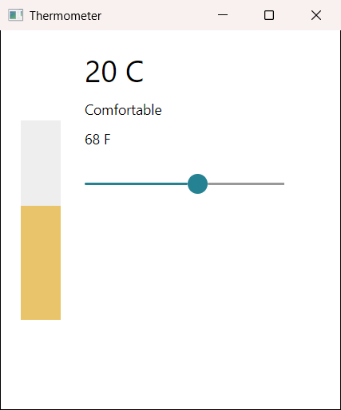
Thermometer
A thermometer: a slider sets the temperature; a tube is filled (a rectangle that grows) and its color goes from blue to red; the state is named
cd samples/UsingDotNet/tests/packages/AvaloniaSamples/apps/Thermometer then ring Thermometer.ringSource code
# A thermometer: a slider sets the temperature; a tube is filled (a rectangle that grows) and its color goes from blue to red; the state is named
load "../../avalonia.ring"
avUse()
nTubeHeight = 200
oWindow = avWindow("Thermometer",340,380)
oPanel = avRow(24)
oPanel.Margin = avThickness(20)
oWindow.Content = oPanel
oTube = new Canvas()
oTube {
Width = 40
Height = nTubeHeight
Background = avBrush("#EEEEEE")
}
oFill = new Rectangle()
oFill.Width = 40
oTube.Children.Add(oFill)
oRight = avStack(10,0)
oSlider = new Slider()
oSlider {
Minimum = -20
Maximum = 50
Value = 20
Width = 200
setValueChangedEvent("update()")
}
oDegrees = avText("")
oDegrees.FontSize = 30
oState = avText("")
oFahrenheit = avText("")
oRight {
Children.Add(oDegrees)
Children.Add(oState)
Children.Add(oFahrenheit)
Children.Add(oSlider)
}
oPanel {
Children.Add(oTube)
Children.Add(oRight)
}
update()
avRun(oWindow)
# --------------------------------------------------------------------------
# the color: blue when it is cold, green when it is mild, red when it is hot
func colorOf nCelsius
if nCelsius < 5
return "#2E86AB"
but nCelsius < 18
return "#2A9D8F"
but nCelsius < 28
return "#E9C46A"
but nCelsius < 38
return "#F4A261"
ok
return "#C73E1D"
func stateOf nCelsius
if nCelsius < 5
return "Cold"
but nCelsius < 18
return "Cool"
but nCelsius < 28
return "Comfortable"
but nCelsius < 38
return "Warm"
ok
return "Hot"
# the height of the fill for a temperature
func fillHeight nCelsius
return (nCelsius + 20) / 70 * nTubeHeight
func update
if not isobject(oFahrenheit)
return
ok
nCelsius = floor(oSlider.Value)
oDegrees.Text = "" + nCelsius + " C"
oState.Text = stateOf(nCelsius)
oFahrenheit.Text = "" + (nCelsius * 9 / 5 + 32) + " F"
oFill.Height = fillHeight(nCelsius)
oFill.Fill = avBrush(colorOf(nCelsius))
oTube.SetTop(oFill,nTubeHeight - oFill.Height)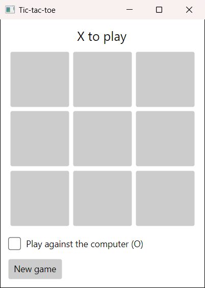
Tic Tac Toe
Tic-tac-toe: two players, or you against the computer (it wins when it can, blocks when it must, then takes the center, a corner, any cell)
cd samples/UsingDotNet/tests/packages/AvaloniaSamples/apps/TicTacToe then ring TicTacToe.ringSource code
# Tic-tac-toe: two players, or you against the computer (it wins when it can, blocks when it must, then takes the center, a corner, any cell)
load "../../avalonia.ring"
avUse()
aBoard = list(9)
cTurn = "X"
lOver = False
aLines = [[1,2,3],[4,5,6],[7,8,9],[1,4,7],[2,5,8],[3,6,9],[1,5,9],[3,5,7]]
oWindow = avWindow("Tic-tac-toe",320,420)
oPanel = avStack(8,12)
oWindow.Content = oPanel
oStatus = avText("X to play")
oStatus.FontSize = 20
oStatus.HorizontalAlignment = "Center"
oGrid = new UniformGrid()
oGrid.Columns = 3
oGrid.Rows = 3
oGrid.Height = 280
aCells = []
for nCell = 1 to 9
oCell = avButton("","play(" + nCell + ")")
oCell {
HorizontalAlignment = "Stretch"
VerticalAlignment = "Stretch"
HorizontalContentAlignment = "Center"
VerticalContentAlignment = "Center"
FontSize = 40
Margin = avThickness(3)
}
aCells + oCell
oGrid.Children.Add(oCell)
next
oComputer = new CheckBox()
oComputer.Content = "Play against the computer (O)"
oPanel {
Children.Add(oStatus)
Children.Add(oGrid)
Children.Add(oComputer)
Children.Add(avButton("New game","newGame()"))
}
newGame()
avRun(oWindow)
# --------------------------------------------------------------------------
func newGame
for nCell = 1 to 9
aBoard[nCell] = ""
aCells[nCell].Content = ""
aCells[nCell].IsEnabled = True
next
cTurn = "X"
lOver = False
oStatus.Text = "X to play"
# the player of the turn takes a cell
func play nCell
if lOver or aBoard[nCell] != ""
return
ok
aBoard[nCell] = cTurn
aCells[nCell].Content = cTurn
cWinner = winner()
if cWinner != ""
lOver = True
oStatus.Text = cWinner + " wins!"
return
ok
if full()
lOver = True
oStatus.Text = "A draw"
return
ok
if cTurn = "X"
cTurn = "O"
else
cTurn = "X"
ok
oStatus.Text = cTurn + " to play"
if cTurn = "O" and oComputer.IsChecked
play(computerMove())
ok
# "X" or "O" when a player has a line, "" when nobody has
func winner
for aLine in aLines
cFirst = aBoard[aLine[1]]
if cFirst != "" and cFirst = aBoard[aLine[2]] and cFirst = aBoard[aLine[3]]
return cFirst
ok
next
return ""
func full
for nCell = 1 to 9
if aBoard[nCell] = ""
return False
ok
next
return True
# the cell where a player completes a line (0 when there is none)
func completing cPlayer
for aLine in aLines
nMine = 0
nFree = 0
for nCell in aLine
if aBoard[nCell] = cPlayer
nMine++
but aBoard[nCell] = ""
nFree = nCell
ok
next
if nMine = 2 and nFree > 0
return nFree
ok
next
return 0
func computerMove
nCell = completing("O")
if nCell = 0
nCell = completing("X")
ok
if nCell = 0 and aBoard[5] = ""
nCell = 5
ok
if nCell = 0
for nCorner in [1,3,7,9]
if aBoard[nCorner] = ""
return nCorner
ok
next
ok
if nCell = 0
for nAny = 1 to 9
if aBoard[nAny] = ""
return nAny
ok
next
ok
return nCell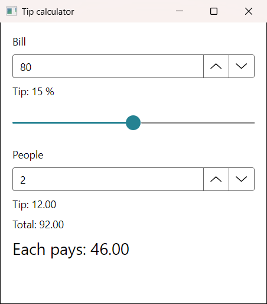
Tip Calculator
Tip calculator: the bill, the tip in percent and the people give the tip, the total and what each person pays
cd samples/UsingDotNet/tests/packages/AvaloniaSamples/apps/TipCalculator then ring TipCalculator.ringSource code
# Tip calculator: the bill, the tip in percent and the people give the tip, the total and what each person pays
load "../../avalonia.ring"
avUse()
oWindow = avWindow("Tip calculator",360,380)
oPanel = avStack(8,16)
oWindow.Content = oPanel
oBill = box(80,0,100000,1)
oPercent = new Slider()
oPercent {
Minimum = 0
Maximum = 30
Value = 15
setValueChangedEvent("calculate()")
}
oPercentText = avText("")
oPeople = box(2,1,50,1)
oTip = avText("")
oTotal = avText("")
oEach = avText("")
oEach.FontSize = 22
oPanel {
Children.Add(avText("Bill"))
Children.Add(oBill)
Children.Add(oPercentText)
Children.Add(oPercent)
Children.Add(avText("People"))
Children.Add(oPeople)
Children.Add(oTip)
Children.Add(oTotal)
Children.Add(oEach)
}
calculate()
avRun(oWindow)
# --------------------------------------------------------------------------
func box nValue, nMinimum, nMaximum, nStep
oBox = new NumericUpDown()
oBox {
Minimum = nMinimum
Maximum = nMaximum
Increment = nStep
Value = nValue
setValueChangedEvent("calculate()")
}
return oBox
# a number with two decimals
func money nValue
nCents = floor(nValue * 100 + 0.5)
nRest = nCents % 100
cRest = "" + nRest
if nRest < 10
cRest = "0" + nRest
ok
return "" + floor(nCents / 100) + "." + cRest
func tipOf nBill, nPercent
return nBill * nPercent / 100
func calculate
if not isobject(oEach)
return
ok
nPercent = floor(oPercent.Value)
nTip = tipOf(oBill.Value,nPercent)
nTotal = oBill.Value + nTip
oPercentText.Text = "Tip: " + nPercent + " %"
oTip.Text = "Tip: " + money(nTip)
oTotal.Text = "Total: " + money(nTotal)
oEach.Text = "Each pays: " + money(nTotal / oPeople.Value)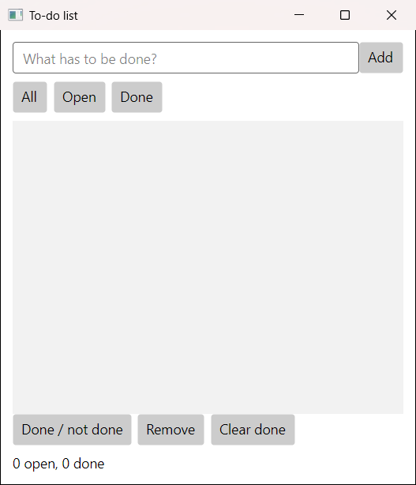
Todo List
A to-do list: add tasks, mark them done, remove them, filter the list; the tasks are kept in a Ring list and shown in a list box
cd samples/UsingDotNet/tests/packages/AvaloniaSamples/apps/TodoList then ring TodoList.ringSource code
# A to-do list: add tasks, mark them done, remove them, filter the list; the tasks are kept in a Ring list and shown in a list box
load "../../avalonia.ring"
avUse()
aTasks = [] # [text, done]
cFilter = "All"
oWindow = avWindow("To-do list",420,460)
oDock = new DockPanel()
oDock.Margin = avThickness(12)
oWindow.Content = oDock
# the row for a new task
oAddRow = new DockPanel()
oAddRow.Margin = avThickness(0)
oAdd = avButton("Add","addTask()")
oAddRow.SetDock(oAdd,"Right")
oNew = new TextBox()
oNew.Watermark = "What has to be done?"
oAddRow {
Children.Add(oAdd)
Children.Add(oNew)
}
oDock.SetDock(oAddRow,"Top")
# the filters
oFilters = new StackPanel()
oFilters {
Orientation = "Horizontal"
Spacing = 6
Margin = avMargin(0,8,0,8)
}
for cName in ["All","Open","Done"]
oFilters.Children.Add(avButton(cName,'setFilter("' + cName + '")'))
next
oDock.SetDock(oFilters,"Top")
# the buttons and the status at the bottom
oStatus = avText("")
oStatus.Margin = avMargin(0,8,0,0)
oDock.SetDock(oStatus,"Bottom")
oActions = new StackPanel()
oActions {
Orientation = "Horizontal"
Spacing = 6
}
oActions {
Children.Add(avButton("Done / not done","toggleTask()"))
Children.Add(avButton("Remove","removeTask()"))
Children.Add(avButton("Clear done","clearDone()"))
}
oDock.SetDock(oActions,"Bottom")
oList = new ListBox()
oDock {
Children.Add(oAddRow)
Children.Add(oFilters)
Children.Add(oStatus)
Children.Add(oActions)
Children.Add(oList)
}
showTasks()
avRun(oWindow)
# --------------------------------------------------------------------------
func addTask
cText = oNew.Text
if not isstring(cText) or trim(cText) = ""
return
ok
aTasks + [trim(cText),False]
oNew.Text = ""
showTasks()
# the index in the list of tasks of the selected line (0 when nothing is selected)
func selectedTask
nLine = oList.SelectedIndex
if nLine < 0
return 0
ok
nShown = 0
nTasks = len(aTasks)
for nTask = 1 to nTasks
if visible(aTasks[nTask])
nShown++
if nShown = nLine + 1
return nTask
ok
ok
next
return 0
func toggleTask
nTask = selectedTask()
if nTask > 0
aTasks[nTask][2] = not aTasks[nTask][2]
showTasks()
ok
func removeTask
nTask = selectedTask()
if nTask > 0
del(aTasks,nTask)
showTasks()
ok
func clearDone
for nTask = len(aTasks) to 1 step -1
if aTasks[nTask][2]
del(aTasks,nTask)
ok
next
showTasks()
func setFilter cName
cFilter = cName
showTasks()
# a task that the filter shows
func visible aTask
return cFilter = "All" or (cFilter = "Open" and not aTask[2]) or (cFilter = "Done" and aTask[2])
# the list box and the status follow the tasks and the filter
func showTasks
oList.Items.Clear()
nOpen = 0
for aTask in aTasks
if not aTask[2]
nOpen++
ok
if visible(aTask)
if aTask[2]
oList.Items.Add("[x] " + aTask[1])
else
oList.Items.Add("[ ] " + aTask[1])
ok
ok
next
oStatus.Text = "" + nOpen + " open, " + (len(aTasks) - nOpen) + " done"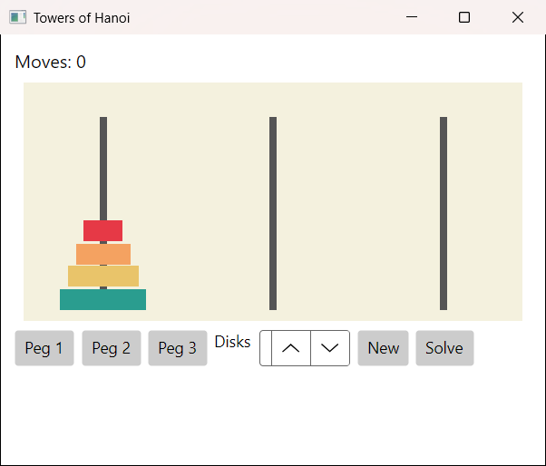
Towers Of Hanoi
Towers of Hanoi: move the disks from the left peg to the right peg, a bigger disk never on a smaller one; Solve shows the shortest way
cd samples/UsingDotNet/tests/packages/AvaloniaSamples/apps/TowersOfHanoi then ring TowersOfHanoi.ringSource code
# Towers of Hanoi: move the disks from the left peg to the right peg, a bigger disk never on a smaller one; Solve shows the shortest way
load "../../avalonia.ring"
avUse()
aPegs = [[],[],[]] # the disks of each peg, the bottom first (a bigger number is a bigger disk)
nDisks = 4
nMoves = 0
nSelected = 0 # the peg that a disk was picked from (0 when none)
aSolution = []
aColors = ["#E63946","#F4A261","#E9C46A","#2A9D8F","#264653","#8E44AD","#34495E"]
oWindow = avWindow("Towers of Hanoi",480,380)
oPanel = avStack(8,12)
oWindow.Content = oPanel
oInfo = avText("")
oInfo.FontSize = 16
oCanvas = new Canvas()
oCanvas {
Width = 440
Height = 210
Background = avBrush("#F4F1DE")
}
oCount = new NumericUpDown()
oCount {
Minimum = 1
Maximum = 7
Value = 4
Width = 80
}
oBar = avRow(6)
oBar {
Children.Add(avButton("Peg 1","pick(1)"))
Children.Add(avButton("Peg 2","pick(2)"))
Children.Add(avButton("Peg 3","pick(3)"))
Children.Add(avText("Disks"))
Children.Add(oCount)
Children.Add(avButton("New","newGame()"))
Children.Add(avButton("Solve","solveGame()"))
}
oPanel {
Children.Add(oInfo)
Children.Add(oCanvas)
Children.Add(oBar)
}
newGame()
avRun(oWindow)
# --------------------------------------------------------------------------
func newGame
nDisks = floor(oCount.Value)
aPegs = [[],[],[]]
for nDisk = nDisks to 1 step -1
aPegs[1] + nDisk
next
nMoves = 0
nSelected = 0
showAll()
# a peg is clicked: the first click picks the top disk, the second one drops it
func pick nPeg
if nSelected = 0
if len(aPegs[nPeg]) > 0
nSelected = nPeg
ok
else
moveDisk(nSelected,nPeg)
nSelected = 0
ok
showAll()
# a disk goes from a peg to another when it is not put on a smaller disk
func moveDisk nFrom, nTo
if nFrom = nTo or len(aPegs[nFrom]) = 0
return False
ok
nDisk = aPegs[nFrom][len(aPegs[nFrom])]
if len(aPegs[nTo]) > 0 and aPegs[nTo][len(aPegs[nTo])] < nDisk
return False
ok
del(aPegs[nFrom],len(aPegs[nFrom]))
aPegs[nTo] + nDisk
nMoves++
return True
# the moves that solve a tower of n disks: [from, to] pairs
func hanoi nCount, nFrom, nTo, nVia
if nCount = 0
return []
ok
aMoves = hanoi(nCount - 1,nFrom,nVia,nTo)
aMoves + [nFrom,nTo]
aMore = hanoi(nCount - 1,nVia,nTo,nFrom)
for aMove in aMore
aMoves + aMove
next
return aMoves
# the solution is played from the start
func solveGame
newGame()
aSolution = hanoi(nDisks,1,3,2)
for aMove in aSolution
moveDisk(aMove[1],aMove[2])
next
showAll()
func isWon
return len(aPegs[3]) = nDisks
func showAll
oCanvas.Children.Clear()
for nPeg = 1 to 3
nCenter = 70 + (nPeg - 1) * 150
oRod = new Rectangle()
oRod.Width = 6
oRod.Height = 170
oRod.Fill = avBrush("#555555")
oCanvas.SetLeft(oRod,nCenter - 3)
oCanvas.SetTop(oRod,30)
oCanvas.Children.Add(oRod)
nLevel = 0
for nDisk in aPegs[nPeg]
oDisk = new Rectangle()
oDisk.Width = 20 + nDisk * 14
oDisk.Height = 18
oDisk.Fill = avBrush(aColors[nDisk])
oCanvas.SetLeft(oDisk,nCenter - oDisk.Width / 2)
oCanvas.SetTop(oDisk,182 - nLevel * 20)
oCanvas.Children.Add(oDisk)
nLevel++
next
next
if isWon()
oInfo.Text = "Solved in " + nMoves + " moves (the best is " + (pow(2,nDisks) - 1) + ")"
but nSelected > 0
oInfo.Text = "Moves: " + nMoves + " Disk picked from peg " + nSelected
else
oInfo.Text = "Moves: " + nMoves
ok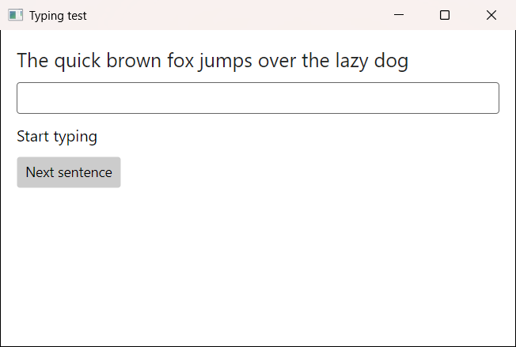
Typing Test
Typing test: a sentence to type; the text turns red at the first mistake; the time and the speed in words a minute are shown when it is finished
cd samples/UsingDotNet/tests/packages/AvaloniaSamples/apps/TypingTest then ring TypingTest.ringSource code
# Typing test: a sentence to type; the text turns red at the first mistake; the time and the speed in words a minute are shown when it is finished
load "../../avalonia.ring"
avUse()
dnImport("System.Diagnostics")
aSentences = [
"The quick brown fox jumps over the lazy dog",
"Ring makes small programs that do a lot",
"A window is a few lines of code with objects",
"Practice makes the fingers fast and the mind calm"
]
cTarget = ""
nSentence = 0
oWatch = new Stopwatch()
lDone = False
oWindow = avWindow("Typing test",520,320)
oPanel = avStack(10,16)
oWindow.Content = oPanel
oTarget = avText("")
oTarget.FontSize = 20
oTarget.TextWrapping = "Wrap"
oInput = new TextBox()
oInput.setTextChangedEvent("typed()")
oStatus = avText("")
oStatus.FontSize = 16
oPanel {
Children.Add(oTarget)
Children.Add(oInput)
Children.Add(oStatus)
Children.Add(avButton("Next sentence","nextSentence()"))
}
nextSentence()
avRun(oWindow)
# --------------------------------------------------------------------------
func nextSentence
nSentence++
if nSentence > len(aSentences)
nSentence = 1
ok
cTarget = aSentences[nSentence]
oTarget.Text = cTarget
oTarget.Foreground = avBrush("#222222")
oInput.Text = ""
oStatus.Text = "Start typing"
oWatch.Reset()
lDone = False
# the number of characters of the text that are right from the start
func rightChars cText
nRight = 0
for nChar = 1 to min(len(cText),len(cTarget))
if cText[nChar] = cTarget[nChar]
nRight++
else
exit
ok
next
return nRight
# the words a minute: five characters make a word
func wordsPerMinute nCharacters, nSeconds
if nSeconds <= 0
return 0
ok
return floor(nCharacters / 5 / (nSeconds / 60))
func typed
if lDone or not isobject(oStatus)
return
ok
cText = oInput.Text
if not isstring(cText) or cText = ""
return
ok
if not oWatch.IsRunning
oWatch.Start()
ok
nRight = rightChars(cText)
if nRight < len(cText)
oTarget.Foreground = avBrush("#C73E1D")
oStatus.Text = "A mistake at character " + (nRight + 1)
else
oTarget.Foreground = avBrush("#222222")
oStatus.Text = "" + nRight + " of " + len(cTarget) + " characters"
ok
if cText = cTarget
oWatch.Stop()
lDone = True
oStatus.Text = "Done! " + wordsPerMinute(len(cTarget),oWatch.ElapsedMilliseconds / 1000) + " words a minute"
ok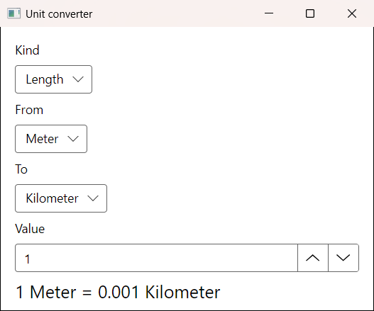
Unit Converter
Unit converter: lengths, weights and volumes; choose the kind, the two units and type a value
cd samples/UsingDotNet/tests/packages/AvaloniaSamples/apps/UnitConverter then ring UnitConverter.ringSource code
# Unit converter: lengths, weights and volumes; choose the kind, the two units and type a value
load "../../avalonia.ring"
avUse()
# each kind has units with their size in the base unit of the kind (meters, grams, liters)
aKinds = [
["Length",[["Meter",1],["Kilometer",1000],["Centimeter",0.01],["Mile",1609.344],["Foot",0.3048],["Inch",0.0254]]],
["Weight",[["Gram",1],["Kilogram",1000],["Pound",453.59237],["Ounce",28.349523125]]],
["Volume",[["Liter",1],["Milliliter",0.001],["Gallon (US)",3.785411784],["Cup (US)",0.2365882365]]]
]
lBusy = False
oWindow = avWindow("Unit converter",420,320)
oPanel = avStack(8,16)
oWindow.Content = oPanel
oKind = new ComboBox()
for aKind in aKinds
oKind.Items.Add(aKind[1])
next
oFrom = new ComboBox()
oTo = new ComboBox()
oValue = new NumericUpDown()
oValue {
Minimum = -1000000
Maximum = 1000000
Value = 1
FormatString = "0.######"
}
oResult = avText("")
oResult.FontSize = 20
oPanel {
Children.Add(avText("Kind"))
Children.Add(oKind)
Children.Add(avText("From"))
Children.Add(oFrom)
Children.Add(avText("To"))
Children.Add(oTo)
Children.Add(avText("Value"))
Children.Add(oValue)
Children.Add(oResult)
}
oKind.setSelectionChangedEvent("kindChanged()")
oFrom.setSelectionChangedEvent("convert()")
oTo.setSelectionChangedEvent("convert()")
oValue.setValueChangedEvent("convert()")
oKind.SelectedIndex = 0
avRun(oWindow)
# --------------------------------------------------------------------------
# the units of the kind that is selected fill the two lists
func kindChanged
if oKind.SelectedIndex < 0
return
ok
lBusy = True
oFrom.Items.Clear()
oTo.Items.Clear()
for aUnit in aKinds[oKind.SelectedIndex + 1][2]
oFrom.Items.Add(aUnit[1])
oTo.Items.Add(aUnit[1])
next
oFrom.SelectedIndex = 0
oTo.SelectedIndex = 1
lBusy = False
convert()
# the size of a unit in the base unit of its kind
func sizeOf nKind, cUnit
for aUnit in aKinds[nKind][2]
if aUnit[1] = cUnit
return aUnit[2]
ok
next
return 1
func convertValue nKind, cFrom, cTo, nValue
return nValue * sizeOf(nKind,cFrom) / sizeOf(nKind,cTo)
func convert
if lBusy or oKind.SelectedIndex < 0 or oFrom.SelectedIndex < 0 or oTo.SelectedIndex < 0
return
ok
nResult = convertValue(oKind.SelectedIndex + 1,oFrom.SelectedItem,oTo.SelectedItem,oValue.Value)
decimals(6)
cText = "" + nResult
decimals(2)
if substr(cText,".") > 0
while right(cText,1) = "0"
cText = left(cText,len(cText) - 1)
end
if right(cText,1) = "."
cText = left(cText,len(cText) - 1)
ok
ok
oResult.Text = "" + oValue.Value + " " + oFrom.SelectedItem + " = " + cText + " " + oTo.SelectedItemWord Counter
Word counter: type or paste a text; the characters, words, lines, sentences and the most used words are updated as you type
cd samples/UsingDotNet/tests/packages/AvaloniaSamples/apps/WordCounter then ring WordCounter.ringSource code
# Word counter: type or paste a text; the characters, words, lines, sentences and the most used words are updated as you type
load "../../avalonia.ring"
avUse()
oWindow = avWindow("Word counter",520,460)
oDock = new DockPanel()
oDock.Margin = avThickness(12)
oWindow.Content = oDock
oStats = avText("")
oStats.Margin = avMargin(0,8,0,0)
oDock.SetDock(oStats,"Bottom")
oTop = new ListBox()
oTop.Height = 100
oTop.Margin = avMargin(0,8,0,0)
oDock.SetDock(oTop,"Bottom")
oBox = new TextBox()
oBox {
AcceptsReturn = True
TextWrapping = "Wrap"
Watermark = "Type or paste a text here"
setTextChangedEvent("update()")
}
oDock {
Children.Add(oStats)
Children.Add(oTop)
Children.Add(oBox)
}
update()
avRun(oWindow)
# --------------------------------------------------------------------------
func textOf
cText = oBox.Text
if isstring(cText)
return cText
ok
return ""
# the words of a text in lower case (letters and digits and ' make a word)
func wordsOf cText
aWords = []
cWord = ""
for cChar in lower(cText)
if isalpha(cChar) or isdigit(cChar) or cChar = "'"
cWord += cChar
else
if cWord != ""
aWords + cWord
cWord = ""
ok
ok
next
if cWord != ""
aWords + cWord
ok
return aWords
# the number of sentences: the marks . ! ? that end a text or are followed by a space
func sentencesOf cText
nSentences = 0
nSize = len(cText)
for nChar = 1 to nSize
if cText[nChar] = "." or cText[nChar] = "!" or cText[nChar] = "?"
if nChar = nSize or cText[nChar + 1] = " " or cText[nChar + 1] = nl
nSentences++
ok
ok
next
return nSentences
# the most used words: [[word, count], ...] with the most used first (words of more than two letters)
func topWords aWords
aCounts = []
aIndex = []
for cWord in aWords
if len(cWord) > 2
nAt = find(aIndex,cWord)
if nAt = 0
aIndex + cWord
aCounts + [cWord,1]
else
aCounts[nAt][2]++
ok
ok
next
return sort(aCounts,2)
func update
if not isobject(oTop)
return
ok
cText = textOf()
aWords = wordsOf(cText)
nLines = 0
if cText != ""
nLines = len(str2list(cText))
ok
oStats.Text = "" + len(cText) + " characters, " + len(aWords) + " words, " + nLines + " lines, " + sentencesOf(cText) + " sentences"
oTop.Items.Clear()
aTop = topWords(aWords)
nTop = len(aTop)
for nWord = nTop to max(1,nTop - 4) step -1
oTop.Items.Add(aTop[nWord][1] + ": " + aTop[nWord][2])
next